Activitats
L'entorn de treball
L’objectiu d’aquesta activitat és reconèixer els diferents elements de l’entorn de treball.
Elements del LibreOffice Writer i configuració
Inicieu el LibreOffice Writer i observeu els diferents elements de la finestra de treball del programa:
- Barra de títols: Informa sobre el nom del document actiu i el nom del programa.
- Barra de menús: Conté, agrupats per categories, tots els comandaments que es poden utilitzar amb el processador de textos.
- Barres d’eines Estàndard i Formatació: conjunt d’icones que permeten executar de forma ràpida els comandaments principals del LibreOffice Writer. Les barres d’eines es poden personalitzar, amagar, mostrar i moure. Les eines d’aquestes barres poden ser icones, textos o ambdues coses.
- Barres de desplaçament Horitzontal i Vertical: permeten controlar la part de document que es mostra en la pantalla.
- Elements de navegació: Anterior o Següent: permeten saltar a l’element anterior o següent (pàgina, taula, marc de text, gràfic, objecte, pàgina, encapçalament, etc.), segons s’hagi escollit prement el botó de Navegació: regles Horitzontal i Vertical. Indiquen la posició de les tabulacions, sagnats i marges del document.
- Barra d’estat: proporciona informació del que s’està veient a la finestra o informació relativa al context. Seleccioneu el menú Ajuda \ Què és això? o premeu Majúscules+F1.
- Passegeu el ratolí, que ara haurà pres la formaper sobre de les diferents eines i objectes de la finestra de treball. En fer-ho obtindreu informació de l’element sobre el qual haureu situat el ratolí. Premeu la tecla Esc o feu clic amb el ratolí per desactivar l’ajuda de context.
Procediu ara a revisar la configuració d’idioma del LibreOffice Writer:
- Escolliu l’opció de menú Eines \ Opcions…
- Desplegueu la branca Configuració de la llengua prement amb el ratolí sobre el signe + i seleccioneu l’opció Llengües. Configureu les opcions de forma que quedin com les que es mostren a la següent figura:
- Premeu el botó D’acord per desar els canvis.
- Assegureu-vos que l’eina “Revisió automàtica”:estigui activa (remarcada i sobre fons gris fosc) i escriviu el text següent: “Aquest text contiene una falta d’ortografia”
- Comproveu que, efectivament, el programa només assenyala la paraulaSi obteniu un resultat diferent:
- 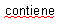
- Comproveu que l’eina “Revisió automàtica” és activa.
- Reviseu la configuració de llengua.
- Sortiu del LibreOffice Writer tot descartant desar el document:
- Escolliu Fitxer \ Surt o premeu Ctrl+Q.
- Premeu el botó Descarta de la finestra que obtindreu.
Creació d’un document
- Inicieu el LibreOffice Writer.
- Escriviu el text següent. No us preocupeu si la longitud de les línies que obteniu al vostre ordinador no és la mateixa que la de les del text que esteu copiant. Canvieu de línia (amb RETORN) només en arribar a final de paràgraf i deixeu que sigui el LibreOffice Writer el que ajusti les línies del text a l’amplada del document.
Text:
Concepte d’estructura organitzativa
L’estructura organitzativa d’una empresa és la que descriu com s’agrupen, com s’identifiquen i com es relacionen els diferents elements que formen l’empresa. Per tant, es pot dir que l’estructura organitzativa determina el nivell d’autoritat i de responsabilitat de cadascun dels membres de l’empresa, i aquests nivells depenen de les funcions que desenvolupen els individus. L’estructura organitzativa d’una empresa està formada per:
El conjunt d’elements que la integren.
Les funcions assignades a cadascun dels elements.
Les relacions jeràrquiques i funcionals que hi ha entre els diferents elements.
Elements de l’estructura organitzativa
L’estructura organitzativa està formada pels elements següents:
Alta direcció: la formen les persones que desenvolupen funcions de direcció general de l’empresa i, per tant, similars a les d’empresari, com ara la presa de decisions estratègiques i la fixació d’objectius generals de l’empresa. Són persones amb responsabilitat general dins de l’organització.
Direcció intermèdia: està formada per càrrecs intermedis o personal executiu. Cadascun d’ells té a càrrec seu un nombre determinat de treballadors. La seva tasca és, fonamentalment, relacionar els objectius generals de l’empresa amb els objectius operatius dels diferents departaments. Són persones amb autoritat formal sobre les bases operatives.
Base operativa: està formada pel conjunt de persones (tècnics i treballadors) directament relacionats amb la producció, venda i prestació de serveis.
Tecnoestructura: està formada pels analistes o experts que estudien les diferents funcions de l’empresa amb l’objectiu de trobar-ne els punts forts i febles i de reforçar els primers i millorar els segons. Són persones expertes en les diferents funcions de la direcció i explotació, que no participen en el treball productiu, sinó que dissenyen, planifiquen i preparen les persones que el duen a terme. En definitiva, serveixen per introduir i fiançar la normalització en l’organització.
Estructura de suport: està formada pel personal d’assessorament que té la funció d’assessorar els directius sobre les diferents matèries: fiscal, laboral, mercantil, legal, etc.
- Deseu el document. Per fer-ho, seleccioneu Fitxer \ Desa o premeu Ctrl+S. També podeu desar-lo prement sobre l’eina Desa de la barra d’eines Estàndard, que té l’aspecte següent:
- En la finestra Anomena i desa que haureu obtingut, localitzeu la destinació fent ús de Desa a, escriviu el nom del fitxer estructura_organitzativa i premeu el botó Desa.
- Sortiu del LibreOffice Writer amb Fitxer \ Surt o prement Ctrl+Q.
Recuperació d’un document
Molt sovint necessitareu recuperar documents amb diferents finalitats: afegir-hi text, canviar-ne el format, imprimir-los, etc. En aquesta activitat treballareu els procediments per recuperar un document, editar-lo i, finalment, desar-lo:
1. Inicieu el LibreOffice Writer.
2. Recupereu el fitxer estructura_organitzativa que heu creat a la pràctica anterior per modificar-lo.
- Escolliu Fitxer \ Obre o premeu Ctrl+O.
- 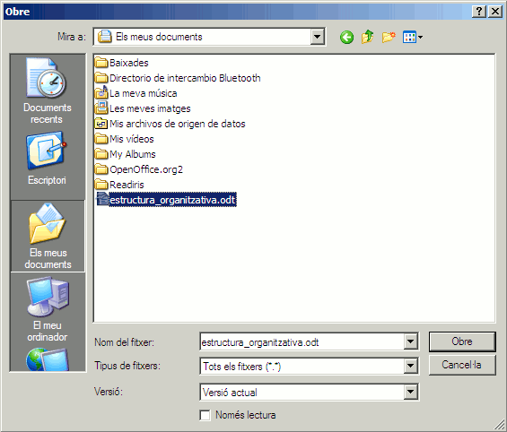
- Localitzeu, en la vostra carpeta de treball, el fitxer estructura_organitzativa.
- Assenyaleu-lo amb el ratolí i premeu el botó Obre. Si no el teniu, podeu fer servir aquest:En aquest cas, deseu-lo en la vostra carpeta de treball i procediu com s’explica al segon punt de la pràctica.estructura_organitzativa ( 19 KB )
3. Aprofiteu per modificar alguns aspectes del format del document:
- Feu clic en qualsevol indret de la primera línia del document, desplegueu l’eina Aplica l’estili seleccioneu Encapçalament 3.
- 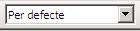
- Feu clic en qualsevol indret de la línia del document El conjunt d’elements que la integren i activeu l’eina Pics activats/desactivats
- Procediu de forma similar amb la resta de línies del document fins que l’aspecte sigui el que observeu en la figura:
4. Deseu el document amb els canvis que heu realitzat:
- Seleccioneu Fitxer \ Desa o premeu l’eina Desade la barra d’eines Estàndard. També podeu desar el fitxer prement la combinació de tecles Ctrl+S.
5. Sortiu del LibreOffice Writer amb Fitxer \ Surt o prement Ctrl+Q.
Escriptura i desplaçaments
L’objectiu d’aquesta activitat és assolir la destresa necessària per escriure amb correcció un document i desplaçar-s’hi amb rapidesa.
En obrir el programa de tractament de textos ja es pot començar a escriure, només cal tenir present les consideracions següents:
- La tecla RETORN només s’ha de prémer per establir un final de paràgraf. Tingueu present que el programa canvia de línia automàticament quan arriba al marge dret del document.
- Els signes de puntuació s’han d’escriure units a la paraula que els precedeix i seguits d’un espai en blanc si no són final de paràgraf. També s’ha d’evitar separar les paraules amb més d’un espai en blanc i afegir espais abans o després d’un apòstrof o d’un guionet.
- Per fer columnes, alinear i justificar blocs i paràgrafs de text no s’han d’inserir mai espais en blanc, s’han de fer servir les tabulacions, les eines de justificació, les eines de sagnat o les taules.
- El punt d’inserció, la barra vertical que parpelleja, indica el punt on s’aniran situant les lletres que es vagin introduint des del teclat. El punt d’inserció es pot situar en qualsevol posició del text que s’ha creat tot fent clic amb el ratolí al lloc desitjat, i també amb ajut de les tecles de desplaçament del teclat, soles o combinades amb altres tecles:
- Fletxa dreta: Desplaça el punt d’inserció una posició a la dreta.
- Fletxa esquerra: Desplaça el punt d’inserció una posició a l’esquerra.
- Fletxa amunt: Desplaça el punt d’inserció a la línia anterior.
- Fletxa avall: Desplaça el punt d’inserció a la línia següent.
- Inici: Desplaça el punt d’inserció a l’inici de la línia.
- Fin: Desplaça el punt d’inserció al final de la línia.
- AvPág: Desplaça una pàgina de pantalla cap avall.
- RePág: Desplaça una pàgina de pantalla cap amunt.
- Ctrl+Inici: Salta a l’inici del document. Si el punt d’inserció d’escriptura es troba en una secció, salta a l’inici de la secció actual.
- Ctrl+Fin: Salta al final del document. Si el punt d’inserció d’escriptura es troba en una secció, salta al final de la secció actual.
- Ctrl+Fletxa dreta: Salta a l’inici de la paraula següent.
- Ctrl+Fletxa esquerra: Salta a l’inici de la paraula anterior.
1. Recupereu el document arees_funcionals.odt
2. Situeu-vos a l’inici del document amb Ctrl+Inici.
3. Localitzeu al document els errors que s’han produït en la col·locació de signes de puntuació. No us serà gens difícil ja que surten senyalats al document amb una ratlla vermella en forma de serra.
4. Situeu el punt d’inserció d’escriptura al lloc adient per corregir els errors. Controlareu millor la posició exacta del punt d’inserció si avanceu, paraula a paraula, prement Ctrl + Fletxa dreta.
5. Separeu el text amb ajut de la barra d’espais o suprimiu l’espai de més amb ajut de la tecla Supr.
6. Situeu-vos, un altre cop, a l’inici del document.
7. Baixeu fins al començament del 5è paràgraf, el que fa referència a l’àrea econòmica i financera, fent servir Ctrl + fletxa avall (quatre cops).
8. Inseriu una línia en blanc amb RETORN.
9. Situeu-vos al principi d’aquesta línia, seleccioneu alineació centrada i escriviu, en negreta, Dibuix n. 1.
10. Situeu-vos, ara, al començament del 7è paràgraf, el que fa referència a l’àrea d’administració, (quatre cops més Ctrl + fletxa avall) i afegiu-hi una altra línia.
11. Amb alineació centrada i en negreta, escriviu Dibuix n. 2 a la línia en blanc que heu afegit.
12. Torneu a l’inici del document prement Ctrl + Inici.
13. Inseriu amb RETORN tres línies en blanc.
14. A la primera línia, amb lletra negreta, de 16 punts de grandària, escriviu Les àrees funcionals.
15. Deseu el document prement l’eina Desa
16. Tanqueu el document (seleccioneu Fitxer \ Tanca).
Procediments bàsics d'edició de documents
L’objectiu d’aquesta activitat és aprendre els usos bàsics del programa.
Selecció de zones de text
Una acció molt freqüent per a la modificació dels textos és la de seleccionar parts d’un document. Les seleccions són zones de text contínues i, en principi, no es poden seleccionar zones discontínues de text. La selecció es pot fer amb el ratolí o amb el teclat.
Amb el ratolí
- Situar el punter del ratolí abans de la primera lletra del text que es vol seleccionar, fer clic amb el botó esquerre, i, sense deixar-lo anar, arrossegar el ratolí fins al final del text a seleccionar. En deixar anar el botó del ratolí, la zona del text quedarà seleccionada.
- Amb doble clic, triple clic o quàdruple clic, es seleccionarà, respectivament, una paraula, una frase o un paràgraf sencer.
Amb el teclat
- Situar el punt d’inserció d’escriptura abans de la primera lletra del text que es vol seleccionar, prémer la tecla Majúscules i, sense deixar-la anar, prémer, repetidament, la tecla Fletxa dreta o qualsevol altra de les tecles de desplaçament del teclat, depenent de si es vol seleccionar caràcter a caràcter o línia a línia.
Combinant el ratolí i el teclat
- Situar el punt d’inserció d’escriptura abans de la primera lletra del text que es vol seleccionar fent clic amb el ratolí. Prémer la tecla Majúscules i, sense deixar-la anar, fer clic amb el ratolí al final del text que es vol seleccionar.
Format manual
El format dels documents es pot afegir a mesura que es van creant els textos o un cop finalitzat el document. Tal com podeu observar en les imatges que figuren a continuació, la barra d’eines Formatació o el menú de context, que s’obtindrà en fer clic amb el botó dret del ratolí sobre el text que es vol canviar de format, permeten fer aquests canvis.

1. Recupereu el document marqueting_mix.odt:
2. Situeu-vos a l’inici del document prement Ctrl+Inici.
3. Destaqueu el títol del document amb l’estil de paràgraf Encapçalament 1.
- Desplegueu l’eina Aplica l’estil i seleccioneu l’opció Encapçalament 1.
4. Seleccioneu la resta del document i canvieu el tipus de lletra a Arial d’ 11 punts de grandària.
- Situeu-vos a l’esquerra de la segona línia del document.
- Premeu, alhora, Ctrl+Majúscules+Fin per seleccionar tot el bloc de text. També podeu fer-ho amb l’ajut del ratolí.
- Desplegueu l’eina Nom del tipus de lletra i escolliu Arial.
- Desplegueu l’eina Mida de la lletra i escolliu 11.
- Traieu la selecció fent clic amb el ratolí en qualsevol indret del document.
5. Separeu els diferents paràgrafs del text afegint una línia en blanc després de cada punt i a part.
- Situeu-vos a la dreta del punt del paràgraf ”…que porten a terme les empreses.”
- Premeu la tecla RETORN.
- Repetiu el procés en la resta de paràgrafs del text.
6. Torneu a l’inici del document (Ctrl+Inici) i canvieu els atributs de les paraules següents, tal com s’indica:
- La política de producte, La política de preu, La política de distribució, La política de comunicació: Negreta.
- L’anàlisi de mercat, La planificació comercial: Subratllat.
- Microentorn i macroentorn: Cursiva i negreta.
- 4 P o màrqueting mix: Arial de 12 punts i de color vermell.
Inicials destacades
Es pot destacar la primera lletra d’un paràgraf activant l’opció Format \ Paràgraf \ Inicials destacades que permet:
- Activar / desactivar l’opció: Visualitza les inicials destacades.
- Canviar el nombre de caràcters destacats: Nombre de caràcters.
- Modificar la quantitat de línies de text que ocupa: Línies.
- Variar la distància de la inicial destacada al text: Espai per al text.
En la següent animació podeu veure el procés per destacar una inicial:
Vegeu la solució al final de l’activitat.
Retallar, copiar i enganxar
Aquestes accions afecten un bloc de text i es poden activar des del menú Edita, si bé resulta més operatiu fer-ho a través de les icones corresponents:
- Retalla el text seleccionat al porta-retalls:
- Copia el text seleccionat al porta-retalls:
- Enganxa, al document, el contingut del porta-retalls:
- 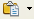
Una altra opció és activar-les des del teclat, amb una combinació de tecles:
- Retallar Ctrl + X
- Copiar Ctrl + C
- Enganxar Ctrl + V
O també es poden activar directament amb el ratolí. El procés que s’ha de seguir és el següent:
- Seleccionar amb el ratolí el bloc de text que es vol traslladar o copiar.
- Situar el punter del ratolí sobre el bloc seleccionat.
- Prémer el botó esquerre del ratolí i, sense deixar-lo anar, desplaçar el punt d’inserció a la part del text on s’ha de traslladar el bloc i deixar de prémer el botó. En el cas de voler obtenir una còpia del bloc, cal prémer la tecla Ctrl abans de fer clic amb el ratolí sobre el bloc. En cada cas, el ratolí canvia de forma segons es vulgui obtenir una còpia o fer un trasllat de text.
1. Recupereu el fitxer conflicte.odt.
2. Feu que el LibreOffice Writer doni format al document de forma automàtica.
- Seleccioneu Format \ Formatació automàtica \ Aplicar.
3. Assegureu-vos que l’idioma del document és el correcte. Si no és així, modifiqueu-lo. Seleccioneu tot el text des d’Edita \ Selecciona-ho tot i escolliu Català a Format \ Caràcter \ Tipus de lletra \ Llengüa.
4. Reviseu l’ortografia del document des d’Eines \ Ortografia i gramàtica.
5. Seleccioneu el text Existència d’interacció a través de la comunicació. i suprimiu-lo.
6. Desfeu l’acció anterior.
- Premeu l’eina Desfés o Ctrl+Z:
7. Copieu al porta-retalls el cinquè paràgraf.
- Seleccioneu el cinquè paràgraf.
- Premeu l’eina Copia o Ctrl+C:
8. Situeu-vos al final del document, afegiu una línia en blanc i enganxeu el contingut del porta-retalls.
- Premeu Ctrl+Fin.
- Premeu RETORN per a afegir una línia en blanc.
- Premeu l’eina Enganxa o Ctrl+V:
9. Retalleu el segon paràgraf.
- Seleccioneu el segon paràgraf.
- Premeu l’eina Retalla o Ctrl+X, que podeu veure tot seguit. Noteu que, en retallar, desapareix el text que havíeu seleccionat.
10. Enganxeu el que heu retallat, i que teniu al porta-retalls, a continuació del text: …que en la vida diària de les organitzacions es produeixin conflictes.
- Situeu el punt d’inserció d’escriptura just després de …es produeixin conflictes. fent servir el ratolí o les tecles de desplaçament del teclat.
- Premeu l’eina Enganxa o Ctrl+V:
11. Amb el ratolí, traslladeu el primer paràgraf al final del document.
- Seleccioneu el primer paràgraf.
- Feu clic, amb el botó esquerre del ratolí, sobre la selecció i, sense deixar anar el botó esquerre del ratolí, traslladeu el punter del ratolí al final del document. Sabreu la posició del punt d’inserció pel senyal en forma de barra vertical que apareixerà al document a mesura que desplaceu el punter del ratolí. El punter del ratolí ara tindrà la forma següent:
- Deixeu anar el botó esquerre del ratolí.
12. Fent ús del ratolí, copieu el nom de l’autor al principi del document.
13. Procediu de la mateixa forma que al punt anterior excepte que, en aquesta ocasió, mantindreu premuda la tecla Ctrl abans d’alliberar el botó esquerre del ratolí. Observeu que el punter del ratolí prendrà la següent forma:
14. Repetiu les pràctiques amb les opcions del menú Edita o amb les eines d’edició de la barra d’eines Estàndard.
15. Feu pràctiques lliures amb copiar i traslladar amb el ratolí.
16. Destaqueu les inicials d’alguns dels paràgrafs del document. Feu servir aquells paràgrafs de major quantitat de línies. Tingueu present que la lletra inicial no podrà ocupar més línies que el propi paràgraf.
- Situeu el punt d’inserció d’escriptura al paràgraf escollit.
- Seleccioneu Format \ Paràgraf.
- Premeu sobre la pestanya Inicials destacades.
- Activeu la casella Visualitza les inicials destacades.
- Canvieu, només, la quantitat de línies que ocuparà la lletra inicial a destacar, a Línies, i l’espai entre la inicial i el text, a Espai per al text.
- Premeu el botó D’acord per desar els canvis.
17. Canvieu a lletra Arial de 12 punts de grandària i color Vermell 1, les paraules conflicte i conflictes que trobeu al text.
- Cerqueu les paraules assenyalades i seleccioneu-les fent doble clic amb el ratolí.
- Feu els canvis que es demanen amb ajut de les eines de la barra d’eines Formatació, o bé amb ajut de l’opció de menú Format \ Caràcter.
18. Feu pràctiques lliures de format de paràgraf o de caràcter al document.
19. Elimineu el document de l’àrea de treball sense desar-lo.
- Seleccioneu Fitxer \ Tanca.
- Premeu l’opció Descarta a la pregunta sobre si voleu desar els canvis al document.
Format de documents
L’objectiu d’aquesta activitat és aplicar, de forma senzilla, els estils de paràgraf i la formatació automàtica.
Aplicar estils de paràgraf
Per canviar l’estil d’un paràgraf del document, cal situar-se en qualsevol punt del paràgraf que es vol modificar, no cal seleccionar-lo, i desplegar la llista d’estils de paràgraf disponibles fent clic, amb el ratolí, al triangle invertit de l’eina Aplica l’estil de la barra d’eines Formatació. A continuació, cal escollir l’estil en el desplegable. En desplegar l’eina Aplica l’estil, disposareu de 7 estils de paràgraf:
- Cos del text
- Encapçalament
- Encapçalament 1
- Encapçalament 2
- Encapçalament 3
- Per defecte
- Text preformatat
Hi trobareu també una altra opció que permet eliminar els estils manuals o els estils de paràgraf adjudicats a una zona del text:
- Neteja el format.
Per últim, l’opció Més… de l’eina Aplica l’estil us ofereix la possibilitat de mostrar la finestra Estils i formatació amb què podreu aplicar, crear, editar, afegir i eliminar estils de format. En aquesta finestra podreu escollir entre estils de paràgraf, de caràcter, de marcs, de pàgina i de pics i llistes numerades.
El desplegable de la part inferior d’aquesta finestra us permetrà mostrar, només, les categories d’estils, de cada tipus, que siguin del vostre interès.
Formatació automàtica
El LibreOffice Writer pot anar donant format al document a mesura que aneu escrivint. Si voleu que l’autoformat sigui actiu mentre escriviu, cal que estigui activa l’opció Format \ Formatació automàtica \ En teclejar.
- L’opció Aplica aplica al document els canvis definits en les opcions de correcció automàtica.
- L’opció Aplica i edita els canvis mostrarà un diàleg que permet escollir quins canvis s’aplicaran i quins no.
Les opcions que s’aplicaran seran aquelles que s’hagin activat a Eines \ Correcció automàtica \ (pestanya) Opcions. En la figura següent, a la columna [T], podeu observar un exemple de quines són les opcions actives o inactives que s’aplicaran per a la correcció automàtica.
1. Activeu el LibreOffice Writer.
2. Comproveu el contingut de l’eina Aplica l’estil i assegureu-vos que l’estil actiu és Per defecte.
3. Seleccioneu Eines \ Correcció automàtica \ (pestanya) Opcions i comproveu que les opcions de la columna [T] són les que apareixen a la figura d’abans. Si fos el cas, activeu o desactiveu les opcions adients.
4. Premeu el botó D’acord per desar els canvis.
5. Escriviu Tipus de conflictes (sobretot, no escriviu cap signe de puntuació al final d’aquest text) i premeu, dos cops, la tecla Retorn.
Observeu que l’aspecte del text haurà canviat i es mostrarà amb l’estil Encapçalament 1 (lletra Arial de 16 punts de grandària i Negreta). Observeu, també, que l’estil de text per a la nova línia és Cos del text.
6. Escriviu 1. Conflictes d’objectius o interessos. No oblideu el punt al costat de la xifra i l’espai en blanc entre el punt i la paraula Conflictes.
7. Premeu la tecla Retorn per canviar de línia. En fer-ho, observareu que haurà canviat l’aspecte de la línia de text, que haurà aparegut la barra d’eines Pics i numeració i que la següent línia de text continuarà la numeració.
8. Escriviu un parell de línies més i acabeu-les totes prement la tecla Retorn:
- Conflictes de judicis, opinions o interpretacions.
- Conflictes de valors o normes.
- Conflictes d’aspectes identitaris.
9. Premeu dos cops la tecla Retorn en finalitzar la línia número 4. Observeu que es desactiva la numeració. Premeu un altre cop la tecla Retorn per deixar una línia en blanc.
10. Proveu de crear els següents elements de formatació automàtica:
- Pics: utilitzant un guió (-), un signe més (+) o un asterisc (*), seguit d’un espai en blanc i una línia de text. Recordeu de prémer dos cops la tecla Retorn per desactivar els pics.
- Línies horitzontals: utilitzant tres guions ( - ), tres guions baixos ( _ ), tres signes igual ( = ), tres asteriscos ( * ), tres titlles ( ~ ) o tres coixinets ( # ).
- Taules: dibuixant-les amb una combinació de signes més ( + ) i signes menys ( – )
+——+———————-+——+ - Negreta: escrivint la frase entre asteriscos
*Text en negreta*. - Subratllat: escrivint la frase entre guions baixos
_Text subratllat_. - Caràcters de fracció: escrivint ½, ¼, ¾.
11. Sortiu del LibreOffice Writer descartant els canvis.
Inserció d'objectes i imatges
L’objectiu d’aquesta activitat és aprendre a inserir objectes i imatges en un document.
Inserció d’objectes
El menú Insereix del LibreOffice Writer permet inserir diferents tipus d’objectes: imatges (des d’un fitxer, des d’un escànner), marcs, objectes (a partir de programes o fitxers), marcadors o hipervincles (per a fitxers HTM), salts (de pàgina, línia o columna), objectes multimèdia (so i vídeo), etc.
- Si l’objecte que s’ha d’inserir és al porta-retalls, l’acció consisteix a enganxar-lo al document.
- Si l’objecte que es vol inserir és un dibuix, cal activar la icona Mostra les funcions de dibuix.
Com podeu observar en la següent imatge, la barra d’eines Dibuix mostra tot un seguit d’eines que permeten inserir diferents tipus d’objectes (rectangles, el·lipses, dibuixos a mà alçada, autoformes…).
- Si l’objecte és un diagrama, cal seleccionar Insereix \ Objecte \ Diagrama…
- Si l’objecte és una expressió matemàtica, cal seleccionar Insereix \ Objecte \ Fórmula.
Alguns d’aquests objectes tenen un contorn, el format del qual es pot modificar des l’opció Gràfics del menú contextual o des del menú Format \ Imatge. Depenent del tipus d’objecte, també se’n poden modificar alguns aspectes formals mitjançant el menú Format \ Imatge o el menú contextual; les opcions que es poden utilitzar són les següents:
- Format \ Imatge \ Ajusta
- Cap: Situa l’objecte en una línia separada del document. El text del document es mostra abans i després, però no als laterals.
- Abans: Ajusta el text a la banda esquerra de l’objecte, si hi ha prou espai.
- Després: Ajusta el text a la banda dreta de l’objecte, si hi ha prou espai.
- Paral·lel: Ajusta el text del document envoltant l’objecte.
- A través: Situa l’objecte davant del text en capes separades.
- Òptim: Ajusta el text a la dreta, a l’esquerra o al voltant segons la posició de l’objecte respecte del text. Si la distància entre el marge del document i l’objecte és inferior a 2 cm, el text no s’ajusta.
- Format \ Imatge \ Tipus \ Àncora.
- A la pàgina: L’objecte queda ancorat a la pàgina.
- Al paràgraf: L’objecte queda ancorat al paràgraf que, en desplaçar-se, fa que es mogui amb ell.
- Al caràcter: L’objecte queda ancorat a un caràcter que, en desplaçar-se, fa que es mogui amb ell.
- Com a caràcter: L’objecte es comporta com una lletra més de la línia de text on s’ha inserit. L’altura de la línia de text s’ajusta a l’altura de l’objecte.
- Alineament
- Esquerre: L’objecte s’alinea a l’esquerra respecte de la pàgina, el caràcter o el paràgraf al qual s’hagi ancorat.
- Centrat: L’objecte s’alinea al centre respecte de la pàgina, el caràcter o el paràgraf al qual s’hagi ancorat.
- Dreta: L’objecte s’alinea a la dreta respecte de la pàgina, el caràcter o el paràgraf al qual s’hagi ancorat.
Inserció d’imatges
A continuació practicareu els procediments per afegir imatges en un document. Seguiu aquests passos:
1. Recupereu i deseu al vostre ordinador les següents imatges:
-

- atencio.gif
Descarregueu-vos aquí l’arxiu comprimit:

Descarregueu-vos aquí l’arxiu comprimit:
2. Recupereu i obriu el fitxer logistica.odt.
3. Canvieu el tipus de lletra del document a Times New Roman de 13 punts de grandària.
- Premeu Ctrl + A per seleccionar tot el document.
- Desplegueu l’eina Nom del tipus de lletra i escolliu Times New Roman.
- Desplegueu l’eina Mida de la lletra i escolliu 13.
- Feu clic amb el ratolí en qualsevol zona del document per treure’n la selecció.
4. A continuació del segon paràgraf, inseriu la imatge atencio.gif.
- Situeu-vos a l’inici del segon paràgraf del document.
- Seleccioneu Insereix \ Imatge \ Des d’un fitxer…
- De la finestra Insereix una imatge, desplegueu Mira a per tal de cercar la carpeta on heu desat la imatge que heu desat al principi de la pràctica.
- Assenyaleu el fitxer atencio.gif i premeu el botó Obre.
- Observeu el resultat.
5. A l’inici del quart paràgraf, inseriu la imatge conceptes.gif, ancoreu-la com un caràcter i centreu-la.
- Situeu-vos a l’inici del quart paràgraf i afegiu una línia en blanc tot prement la tecla Retorn.
- Amb Insereix \ Imatge \ Des d’un fitxer.., inseriu la imatge conceptes.gif. Recordeu com ho heu fet en el cas anterior.
- Premeu el botó dret sobre la imatge i, del menú de context, situeu-vos sobre l’opció Àncora.
- Feu clic sobre l’opció Com a caràcter. Observeu que, com que es comporta com si fos una lletra més del text, la imatge es situa a l’inici de la línia on l’heu situada.
- Feu clic a la dreta de la imatge per treure’n la selecció i premeu l’eina Justificat per centrar-la.
-

6. Modifiqueu la grandària de les imatges:
- Feu clic sobre la icona d’atenció per seleccionar-la.
- Observeu els 8 senyals de color verd que apareixen envoltant la imatge. Si els arrossegueu amb el ratolí, aconseguireu augmentar o disminuir la grandària de la imatge. Val a dir també que si manteniu premuda la tecla Majúscules mentre arrossegueu els senyals amb el ratolí, aconseguireu que la imatge augmenti o disminueixi tot mantenint les proporcions.
7. Deseu el document després d’afegir un comentari:
- Seleccioneu Fitxer \ Propietats.
- Premeu la pestanya Descripció.
- Escriviu un comentari (unes dues línies de text) a l’interior del quadre Comentario.
- Premeu el botó D’acord per desar els canvis.
- Deseu el document a la vostra carpeta de treball des de Fitxer \ Anomena i desa.
Estils
Els objectius d’aquesta activitat són els següents:
- Conèixer els diferents tipus d’estils.
- Aplicar estils.
- Utilitzar l’eina d’estils.
Els estils
Els estils permeten donar format al document segons una forma preestablerta a la plantilla o al mateix document. El LibreOffice Writer diferencia entre els estils de paràgraf, de caràcter, els de marc, els de pàgina i els estils de llista.
- Estils de paràgraf: Contenen les propietats de format del paràgraf: sagnat i espaiat, alineació, flux del text, tipus de lletra i les seves característiques, contorns, tabulació, inicials destacades i, finalment, les característiques del fons de paràgraf.
- Estils de caràcter: Contenen les propietats de format dels caràcters: tipus de lletra, efectes del tipus de lletra, posició i, finalment, característiques del fons de lletra.
- Estils de marc: Contenen les propietats de format dels marcs: tipus (quant a la mida i posició), opcions, ajustament pel que fa al text del document, fons del marc, característiques del contorn i, finalment, columnes del marc.
- Estils de pàgina: Contenen les característiques de disseny de les pàgines del document: format del paper i marges del document, característiques del fons de pàgina, capçalera i peu de pàgina, característiques dels contorns de la pàgina, columnes de la pàgina i, per últim, les característiques de les notes al peu.
- Estils de llista: Contenen les característiques de disseny per aplicar-les a les llistes numerades i les llistes amb pics: tipus de pics, estils de numeració, tipus d’esquema, gràfics, posició i espaiat en funció del nivell i, per últim, les opcions corresponents a cada nivell.
Aplicació d’estils
Els estils es poden aplicar de diferents formes i amb diferents eines:
- Amb la barra d’eines.
- Amb el teclat.
- Des de la finestra Estils i formatació.
Amb la barra d’eines
Els estils més comuns de paràgraf, de caràcter i de llistes, es poden aplicar fàcilment des de la barra d’eines Formatació amb les opcions de l’eina Aplica l’estil.
- 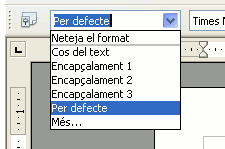
Alguns estils es poden aplicar també amb determinades combinacions de tecles del teclat:
- Ctrl+1 aplica l’estil Encapçalament 1.
- Ctrl+2 aplica l’estil Encapçalament 2.
- Ctrl+3 aplica l’estil Encapçalament 3.
- Ctrl+0 (zero) aplica l’estil Per defecte.
L’opció de menú Eines \ Personalitza… \ Teclat permet assignar diferents combinacions de tecles a determinats estils de paràgraf, caràcter, etc.
Des de la finestra Estils i formatació
Per obrir la finestra Estils i formatació, es pot procedir de diferents maneres:
- Activant l’eina Estils i formatació:
- 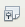
- Des de l’eina Aplica l’estil amb l’opció Mes…
- O prement la tecla F11.
- 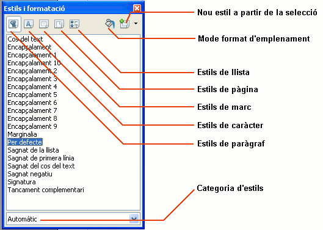
A la part inferior de la finestra Estils i formatació podem escollir la categoria de formats a mostrar.
Per aplicar un estil des d’Estils i formatació:
- En el document, seleccioneu l’element o text del document o voleu aplicar l’estil. En el cas de paràgrafs només és necessari que el punt d’inserció d’escriptura estigui situat al paràgraf.
- A la finestra d’Estils i formatació, si cal primer seleccioneu la categoria d’estil o la icona del tipus d’estil per aplicar (de paràgraf, de caràcter, etc.), i seguidament feu doble clic sobre el nom de l’estil a aplicar.
Desenvolupament de l’activitat
Apliqueu els continguts explicats a l’activitat següent:
Assignar estils amb el teclat
1. Activeu el LibreOffice Writer. El programa us haurà creat un full en blanc.
2. Escriviu les línies de text següents: Activitats de format en la primera i Hi ha diferents eines per aplicar estils en la segona, i premeu Retorn per inserir un salt de línia.
3. Des de la primera línia, premeu Ctrl+1 per aplicar l’estil Encapçalament 1. Observeu el canvi quant al tipus de lletra, grandària, etc. que s’ha produït. L’estil s’ha aplicat al paràgraf i no ha calgut seleccionar cap part del paràgraf.
4. Des de la segona línia, premeu Ctrl+2 per aplicar l’estil Encapçalament 2.
Assignar estils amb la barra d’eines
1. A la tercera línia escriviu Es poden aplicar diferents tipus d’estils, desplegueu l’eina Aplica l’estil i escolliu l’estil Encapçalament 1.
2. Premeu Retorn per afegir un salt de línia. En fer-ho, observeu que l’estil actiu que apareix a l’eina Aplica l’estil és Cos del text.
3. Escriviu, ara, Els estils de caràcter només afecten les característiques de la lletra. A continuació:
- Feu doble clic amb el ratolí sobre la paraula caràcter per seleccionar-la.
- Utilitzeu les eines Nom del tipus de lletra, Mida de la lletra i Color de la lletra perquè sigui Arial Black de 24 punts i de color Verd 4. Com podeu observar, les característiques aplicades només afecten certes lletres del text. A més, ha calgut seleccionar part del text per aplicar els canvis d’estil de caràcter.
4. Premeu la tecla Fin per situar-vos al final de la línia de text i premeu Retorn per inserir un salt de línia.
5. Escriviu Primer element de llista numerada i, sense canviar de línia, activeu l’eina Numeració activada/desactivada:
Observeu el canvi que s’ha produït al text i, també, que apareix la barra d’eines Pics i numeració que conté les eines que us permeten controlar les característiques en aquest tipus de llistes.
6. Premeu la tecla Retorn per inserir un salt de línia i escriviu Segon element de la llista numerada.
7. Sense canviar de línia, premeu l’eina Pics activats/desactivats:
Tant és que feu servir la de la barra d’eines Formatació com la que apareix a la barra d’eines Pics i numeració; el resultat serà el mateix.
8. Afegiu dos salts de línia (premeu dues vegades la tecla Retorn). Així desactivareu l’estil de llista.
9. Deseu el document amb el nom estils.odt.
Assignar estils des de la finestra Estils i formatació
1. Activeu l’eina Estils i formatació (o bé premeu la tecla F11):
Observeu que la llista d’estils que hi apareix és la corresponent a la categoria Automàtic (si volguéssiu obtenir la llista sencera, hauríeu d’escollir la categoria Tots els estils).
2. Feu clic en qualsevol indret del primer paràgraf. Observeu que l’estil Encapçalament 1 queda marcat per indicar que, aquest, és l’estil aplicat en aquest paràgraf.
3. Feu doble clic sobre l’estil Encapçalament 2. Observeu el canvi que s’haurà produït al paràgraf.
4. Apliqueu ara l’estil Encapçalament 10 i, tot seguit, l’estil Cos del text.
5. Restabliu l’estil inicial fent doble clic sobre l’estil Encapçalament 1.
6. Feu doble clic en la paraula característiques de la quarta línia del document.
7. Activeu l’eina Estils de caràcter de la finestra Estils i formatació.
8. Feu doble clic sobre l’estil Exemple i observeu els canvis en la paraula. Proveu, també, amb els estils Èmfasi, Èmfasi fort i Enllaç d’Internet.
9. Restabliu l’estil de caràcter aplicant l’estil Per defecte.
10. Feu clic en la penúltima línia del text.
11. Activeu l’eina Estils de llista de la finestra Estils i formatació:
12. Feu doble clic sobre l’estil Llista 3. Observeu-ne el canvi.
13. Feu clic en la darrera línia del text.
14. Assigneu l’estil Llista 5.
15. Sortiu del LibreOffice Writer descartant desar el document.
Crear i modificar estils
Els objectius d’aquesta activitat són els següents:
- Crear estils.
- Modificar estils.
- Eliminar estils.
- Definir estils de pàgina.
- Aplicar estils d’encapçalament.
Creació d’estils
Es poden crear estils de diferents maneres:
- A partir d’un text amb format.
- Des de la finestra Estils i formatació.
A partir d’un text amb format
La manera més fàcil de crear un estil és modificar les característiques d’un paràgraf i entrar el nom del nou estil a la llista d’estils, però en aquest cas només es poden definir estils de paràgraf.
Heu de fer el següent:
- Teclegeu un text i adjudiqueu-li format manualment amb les eines adients (tipus de lletra, mida de la lletra, característiques de la lletra, alineació del paràgraf, etc.).
- Premeu la combinació de tecles Majúscules+F11 o, si ho preferiu, aneu al menú Format \ Estils i formatació \ feu clic a l’eina Nou estil a partir de la selecció, i escolliu l’opció Estil nou des de la selecció.
- Entreu el nom del nou estil en la finestra Crea un estil:
- Premeu el botó D’acord. Si el nom de l’estil ja existeix, el programa us demanarà si el voleu sobreescriure. Per una altra banda, si el nom es correspon al d’un estil per defecte, el programa us demanarà que trieu un altre nom, ja que els estils per defecte no es poden eliminar.
Des de la finestra Estils i formatació
També es poden crear estils, nous o basats en les característiques d’un altre, des de la finestra Estils i formatació. El procés és molt similar en ambdós casos i només es diferencia al moment d’escollir si l’estil està basat en un altre o en cap.
- Per crear un estil propi no basat en cap altre estil:
- Per crear un estil propi basat en les característiques d’un altre estil:
Modificació d’estils
El procés de modificació d’un estil és molt similar al de crear un estil basat en un altre.
En aquest cas, els passos que heu de seguir seran els següents:
- Mostreu, si és necessari, la finestra Estils i formatació.
- Escolliu la categoria d’estils on hi ha l’estil que es vol modificar.
- Feu clic amb el botó dret del ratolí sobre el nom de l’estil.
- Demaneu l’opció Modifica.
- Per últim, de les diferents fitxes de la finestra Estil de paràgraf, modifiqueu les característiques adients.
Eliminació d’un estil
Cal tenir present que només es poden eliminar els estils creats per l’usuari; els estils predeterminats del LibreOffice Writer només es poden modificar.
Els passos que heu de seguir són els següents:
- Mostreu, si és necessari, la finestra Estils i formatació.
- Escolliu la categoria d’estils on hi ha l’estil que es vol eliminar i que serà un estil creat per l’usuari.
- Feu clic amb el botó dret del ratolí sobre el nom de l’estil que es vol eliminar.
- Demaneu l’opció Suprimeix…
- Contesteu afirmativament la pregunta que efectua el programa.
Estils de pàgina
El LibreOffice Writer utilitza estils de pàgina per especificar el disseny d’una pàgina, inclosa l’orientació d’aquesta, el fons, els marges, les capçaleres, els peus de pàgina i les columnes de text.
Per canviar el disseny d’una pàgina concreta s’ha de crear i aplicar un estil personalitzat per a aquesta pàgina.
Per definir un nou estil de pàgina, caldrà que realitzeu les accions següents:
- Escolliu Format \ Estils i formatació, o bé premeu F11.
- Premeu l’eina Estils de pàgina:
- En la llista d’estils de pàgina feu clic amb el botó dret del ratolí i escolliu Nou.
- En la fitxa Organitzador escriviu un nom en el requadre Nom.
- Al requadre Estil següent…
- Escolliu, de la llista, l’estil Per defecte si només desitgeu aplicar l’estil creat a una sola pàgina.
- Escolliu, de la llista, el nom de l’estil creat si desitgeu aplicar aquest estil a més d’una pàgina.
- Utilitzeu la resta de fitxes per definir les característiques del format de pàgina a crear.
Observeu, en el següent tutorial, un exemple de com definir un format de pàgina:
Desenvolupament de l’activitat
Apliqueu els continguts explicats a l’activitat següent:
Creació d’estils a partir d’un text amb format
1. Recupereu el document
2. Obriu el LibreOffice Writer i recupereu el document que hi heu desat.
3. Seleccioneu la primera línia del document (feu triple clic a sobre) i doneu-li el format següent:
- Tipus de lletra: Arial black de 36 punts.
- Format de paràgraf:
- Espaiat sobre el paràgraf de 5 cm (podeu escriure’l directament a la casella).
- Alineació centrada.
4. Estil 1: sobre la selecció anterior, premeu Majúscules+F11 i escriviu Títol portada a la finestra Crea un estil. Premeu D’acord per desar els canvis.
5. Estil 2: de forma similar, aprofiteu la segona línia del document per definir l’estil Subtítol portada amb les característiques següents:
- Tipus de lletra: Arial black de 24 punts.
- Format de paràgraf:
- Espaiat sobre el paràgraf de 5 cm.
- Espaiat sota el paràgraf de 5 cm.
- Alineació centrada.
6. A continuació, apliqueu a la tercera i quarta línies del text, les següents característiques de caràcter i paràgraf:
- Tipus de lletra: Arial black de 16 punts.
- Format de paràgraf: Alineació dreta.
7. Estil 3: Ara definiu l’estil autor/a amb la finestra Estils i formatació, a partir de les línies de text anteriors.
- Situeu-vos en una de les dues línies de text anteriors i aneu al menú Format \ Estils i formatació.
- Feu clic a l’eina Nou estil a partir de la selecció, i escolliu l’opció Nou estil a partir de la selecció.
- Entreu el nom autor/a en la finestra Crea un estil.
Creació d’estils de pàgina
1. Premeu F11 en el cas que no sigui visible la finestra Estils i formatació.
2. Estil 1:
- Premeu l’eina Estils de pàgina. De la part inferior de la finestra, si és necessari, desplegueu la llista de categories i escolliu Estils personalitzats (no hauria de veure’s cap estil definit).
- Premeu el botó dret del ratolí sobre la finestra i, del menú de context, escolliu Nou….
- En la fitxa Organitzador: escriviu Portada a la casella Nom, desplegueu Estil següent i escolliu Per defecte. Premeu el botó D’acord per desar els canvis.
3. Estil 2: de forma similar, creeu l’estil de pàgina Document amb les característiques següents:
- Fitxa Organitzador:
- Nom: escriviu Document.
- Estil següent: seleccioneu Document.
- Categoria: trieu Estils personalitzats.
- Fitxa Pàgina:
- Format del paper: a Orientació marqueu Horitzontal.
- Marges: tots a 3 cm.
- Fitxa Capçalera: amb Activa la capçalera activada.
- Fitxa Peu de pàgina: amb Activa el peu de pàgina activat.
- Premeu el botó D’acord per desar els canvis.
Aplicació d’estils de pàgina
1. Situeu-vos a l’inici del document (premeu Ctrl+Inici).
2. Feu doble clic sobre l’estil de pàgina Portada per adjudicar-lo a aquesta pàgina. Observeu a la segona casella de la barra d’estat que apareix reflectit l’estil que haureu adjudicat.
3. Situeu-vos a continuació de la cinquena línia de text, que correspon a una línia en blanc entre el càrrec de l’autor i el començament del text).
4. Demaneu Insereix \ Salt manual.
- Assenyaleu l’opció Salt de pàgina, desplegueu la llista Estil, escolliu Document i premeu el botó D’acord.
- 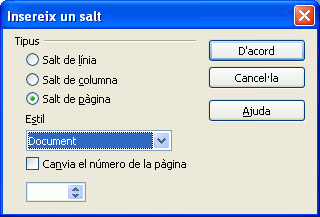
5. Premeu l’eina Previsualització de la pàgina i observeu el resultat obtingut.
6. Premeu el botó Tanca la previsualització.
Aplicació d’estils amb el teclat
1. Situeu-vos a la segona pàgina, feu clic a l’interior del requadre de la capçalera (si no fos visible, demaneu Visualitza \ Límits del text).
2. Escriviu Departament de publicitat.
3. Premeu Ctrl+1 per adjudicar-li l’estil Encapçalament 1.
4. Situeu-vos a la pàgina següent i observeu que comparteix la mateixa capçalera que la pàgina anterior.
5. Situeu-vos a l’interior del requadre del peu de pàgina (de la segona o tercera pàgina) i demaneu Insereix \ Camps \ Número de pàgina.
6. Premeu Ctrl+2 i alineeu a la dreta el número de pàgina.
7. Situeu-vos al final del document (Ctrl+Fin).
8. Inseriu un salt de pàgina, però en aquest cas demaneu estil Per defecte com a format de pàgina per a aquesta nova pàgina.
9. Observeu els resultats amb l’opció Previsualització de la pàgina.
10. Deseu el document en la vostra carpeta de treball amb el nom proposta.odt.
Capçaleres i peus de pàgina
L’objectiu d’aquesta activitat és aprendre a definir capçaleres i peus de pàgina en un document.
Capçaleres, peus de pàgina i paginació
Les capçaleres i peus de pàgina són àrees situades en els marges superior i inferior de les pàgines en les quals s’hi pot afegir text o imatges. També s’hi poden afegir camps, com ara els números de pàgina.
Recupereu el document
1. Doneu forma al document:
- Utilitzeu els estils Encapçalament 1 i Encapçalament 3 per fer els títols i subtítols.
- Seleccioneu el títol.
- Desplegueu l’eina aplica l’estil i seleccioneu l’estil adient per a cada un.
-
- Seleccioneu els paràgrafs i canvieu la lletra Times New Roman per la que vosaltres vulgueu.
- Sense treure la selecció, activeu l’einaJustifica per justificar tot el document.

2. Inseriu-hi una capçalera.
Seleccioneu Insereix \ Capçalera \ Per defecte.
També ho podeu fer des de Format \ Pàgina \ Capçalera.
- Si ho feu d’aquesta manera, i voleu definir capçaleres i peus de pàgina diferents per a les pàgines senars i parells cal que deixeu en blanc la casella de verificació El mateix contingut esquerra/dreta. En cas contrari, cal que l’activeu.
- Les dimensions, en horitzontal, de la capçalera o el peu de pàgina es poden definir actuant sobre els controls Marge esquerre i Marge dret, escrivint el valor directament, o clicant les fletxes del control per augmentar-ne o disminuir-ne el valor.
- La casella Ajusta automàticament l’alçada activada permet que l’alçada de la capçalera o del peu de pàgina variï en funció del contingut que s’hi afegeixi. Si està desactivada, l’alçada no canvia.
3. Escriviu a la capçalera el títol de la matèria Logística comercial. Utilitzeu la icona centrar
4. Inseriu-hi un peu de pàgina.
Seleccioneu Insereix \ Peu \ Per defecte. Com en el cas de la capçalera, també ho podeu fer des de Format \ Pàgina \ Peu de pàgina.
5. Pagineu el document a la part central del peu de pàgina. Aneu al menú Insereix \ Camps \ Número de pàgina.
Un cop inserit, podeu donar format al número de pàgina com si fos qualsevol altre fragment de text (tipus de lletra, grandària, estil, alineació, …). Per fer-ho cal seleccionar el camp corresponent al número de pàgina i, posteriorment, assignar-li el format desitjat.
6. Deseu el document amb el nom distribucio.odt
La següent animació mostra com crear capçaleres i peus de pàgina:
Capçaleres i peus de pàgina diferents
Pot ser que tinguem documents on voldríem posar capçaleres i/o peus de pàgina diferents segons l’apartat o secció. Per tal de poder-ho fer, haurem d’haver inserit salts de pàgina en el document.
1. Obriu el document distribucio.odt que heu guardat en l’exercici anterior.
2. Situeu-vos a l’inici del document i inseriu-hi un salt de pàgina.
- Insereix \ Salt manual… \ Salt de pàgina escollint a Estil l’opció Per defecte.
3.Torneu a inserir un altre salt de pàgina amb les mateixes característiques.
- Veureu que es conserva l’encapçalament i canvia el número de pàgina.
4. Situeu-vos a la primera pàgina i feu clic a la icona Estils i formatació.
S’obrirà un quadre de diàleg on trobareu els diferents estils. Cliqueu el botó Estils de pàgina.
5. Feu doble clic a l’estil Primera pàgina.
- Observeu com desapareix la capçalera i el número de pàgina.
6. Situeu-vos a la segona pàgina i feu doble clic a Índex.
- Observeu com desapareix també la capçalera i el peu de pàgina que hi havia.
7. Si ara inseriu una capçalera, veureu que podeu escollir a quines planes la voleu segons l’estil aplicat.
8. Deixeu la primera pàgina sense capçalera i com a peu de pàgina escriviu el vostre nom alineat a la dreta.
9. A la segona pàgina, la de l’índex, poseu com a capçalera la paraula Índex en negreta, centrat i lletra Arial Narrow de 12 punts. No hi poseu peu de pàgina.
10. Comproveu que la resta de document queda amb la capçalera que tenia i amb el peu de pàgina numerat.
11. Deseu el document amb el nom distribucio2.odt.
Ara veurem com poder numerar un document sense necessitat de començar pel número 1:
- Situeu-vos a l’inici de la pàgina que voleu numerar de forma diferent.
- Aneu a Format \ Paràgraf… \ Flux del text i a la secció del mig marqueu Insereix i Amb estil de pàgina, després escriviu el número de pàgina pel qual voleu que comenci.
- Feu proves amb el document de la distribucio2.odt que heu guardat en l’exercici anterior.
Podeu veure el procés que heu de seguir en la següent animació:
Camps
Els objectius d’aquesta activitat són els següents:
- Inserir camps de data.
- Inserir camps d’hora.
- Inserir numeració de pàgines.
- Conèixer els diferents camps que es poden inserir.
Els camps de LibreOffice
Els Camps són variables que el LibreOffice té definides i que es poden inserir en diferents llocs del document.
el LibreOffice porta definits, de base, tot un seguit de camps: Data, Hora, Número de pàgina, Recompte de pàgines, Assumpte, Títol, Autor.
A banda d’aquests camps que el LibreOffice té definits per defecte, es pot comptar amb:
- Camps vinculats a una taula d’una base de dades.
- Camps definits per nosaltres mateixos.
Camps definits per defecte
Per inserir els camps. Feu Insereix \ Camps \ seleccioneu el que us interessi:
Data
- Per donar-li format, podeu col·locar-vos damunt de la data i fer aparèixer el menú de context. Seleccioneu Camps…. Al quadre de diàleg que apareix, podeu escollir entre:
- Data (fixa): serà la data actual de l’ordinador i no es modificarà.
- Data: en aquest cas, la data s’actualitzarà cada vegada que s’obri el document o que es forci l’actualització dels camps.
- En aquest mateix quadre de diàleg, podreu determinar el format que voleu que tingui la data.
Hora
- Per donar-li format, podeu col·locar-vos damunt de l’hora i fer aparèixer el menú de context. Seleccioneu Camps…. Al quadre de diàleg que apareix, podeu escollir entre:
- Hora (fixa): serà l’hora actual de l’ordinador i no es modificarà.
- Hora: en aquest cas, s’anirà actualitzant cada vegada que s’obri el document o que es forci l’actualització dels camps.
- En aquest mateix quadre de diàleg, podreu determinar el format que voleu que tingui l’hora.

Número de pàgina
Seleccionant la inserció d’aquest camp, el que el LibreOffice Writer fa és inserir el número que li correspon a la pàgina, el qual s’anirà actualitzant a mesura que es modifica el document.
Recompte de pàgines
Seleccionant la inserció d’aquest camp, el que el LibreOffice Writer fa és inserir el total de pàgines que té el document, i s’anirà actualitzant a mesura que es modifica la llargada del mateix.
Assumpte
Seleccionant la inserció d’aquest camp, el que el LibreOffice Writer fa és inserir el contingut que hàgiu entrat a la casella Fitxer \ Propietats… \ Descripció \ Assumpte.
Títol
Seleccionant la inserció d’aquest camp, el que el LibreOffice Writer fa és inserir el contingut que hàgiu entrat a la casella Fitxer \ Propietats… \ Descripció \ Títol.
Autor
- Seleccionant la inserció d’aquest camp, el que el LibreOffice Writer fa és inserir el nom especificat per l’autor o l’autora original del document.
- Ara bé, reinicialitzant aquestes dades (Fitxer \ Propietats… \ General \ Suprimeix) s’agafarà el nom entrat a les opcions de configuració de LibreOffice (Eines \ Opcions \ LibreOffice \ Dades d’usuari \ Nom/Cognom/Inicials).
Altres camps
Camps vinculats a una taula d’una base de dades
- Els emprareu, principalment, en l’obtenció d’etiquetes o en la combinació de correu.
- Per inserir-los feu Insereix \ Camps \ Altres…
Camps definits per l’usuari
- Els emprareu per definir una variable.
- Per inserir-los feu Insereix \ Camps \ Altres… \ pestanya Variables.
- El valor d’aquesta variable el podreu inserir en qualsevol lloc del document actiu on feu la definició.
Desenvolupament de l’activitat
Apliqueu els continguts explicats a l’activitat següent:
- Recupereu el document “pressupost.odt” i deseu-lo en la vostra carpeta de treball.
- Obriu-lo.
Data
Col·loqueu-vos a l’esquerra del peu, inseriu el camp Data i doneu-li format:
- Feu Insereix \ Camps \ Data.
- Col·loqueu-vos damunt de la data i feu aparèixer el menú de context. Seleccioneu Camps…
- Al quadre de diàleg que apareix, escolliu Data perquè s’actualitzi cada vegada que s’obri el document o que es forci l’actualització dels camps.
- Apliqueu-li el format dd/mm/aaaa.
Hora
Col·loqueu-vos a la dreta del peu, inseriu el camp Hora i doneu-li format:
- Feu Insereix \ Camps \ Hora.
- Col·loqueu-vos damunt de l’hora i feu aparèixer el menú de context. Seleccioneu Camps…
- Al quadre de diàleg que apareix, escolliu Hora perquè s’actualitzi cada vegada que s’obri el document o que es forci l’actualització dels camps.
- Apliqueu-li el format hh:mm.
Número de pàgina i recompte de pàgines
- Col·loqueu-vos al mig del peu:
- Escriviu pàg.
- Al costat inseriu el camp que indiqui el número de pàgina: Insereix \ Camps \ Número de pàgina.
- A continuació escriviu /.
- I tot seguit inseriu el camp que indiqui el total de pàgines: Insereix \ Camps \ Recompte de pàgines.
- Deseu el document amb el nom pressupost_977.odt.
Correcció automàtica
Els objectius d’aquesta activitat són els següents:
- Utilitzar les opcions de correcció automàtica.
- Conèixer les eines de formatació automàtica.
Correcció automàtica
El LibreOffice Writer permet corregir de forma automàtica determinats tipus d’errades que es fan en el document.
També permet substituir determinats símbols per altres més complicats de fer de forma manual.
Els canvis que es realitzaran dependran de les opcions a Eines \ Correcció automàtica \ Reemplaça.
- Reemplaça:
- Edita la taula de substitució per corregir o substituir automàticament paraules o abreviatures del document. Es pot aconseguir que, per exemple, se substitueixi una ‘c’ sola pel caràcter ©.
- La substitució s’aplica després de prémer la tecla d’espaiat.
- Excepcions: aquí s’han d’incloure totes aquelles combinacions de lletres o paraules que es vol que el LibreOffice Writer no substitueixi automàticament.
- Opcions: en aquest bloc es poden marcar o desmarcar totes aquelles opcions que es vol que el LibreOffice dugui a terme durant l’autoformat.
- Cometes personalitzades: es pot indicar al LibreOffice Writer que substitueixi automàticament les cometes que s’introdueixen en escriure per unes altres de més vistoses quant a tipografia.
- Compleció de paraules: es pot activar la compleció per a les paraules que s’escriuen més sovint i que el mateix programa vagi completant la llista de manera automàtica i transparent amb les paraules que aneu escrivint.
Formatació automàtica
La formatació automàtica té tres opcions:

- Format \ Formatació automàtica \ En teclejar: aplica automàticament format al document mentre s’escriu, seguint les indicacions configurades a Eines \ Correcció automàtica \ Opcions.
- Format \ Formatació automàtica \ Aplica: aplica automàticament al document que s’està treballant el format definit a les opcions establertes a Eines \ Correcció automàtica \ Opcions.
- Format \ Formatació automàtica \ Aplica i edita els canvis: aplica automàticament al document que s’està treballant el format definit a les opcions establertes a Eines \ Correcció automàtica \ Opcions, però va apareixent un quadre de diàleg que demana la confirmació abans de fer cada canvi.
Desenvolupament de l’activitat
Apliqueu els continguts explicats a l’activitat següent:
- Creeu un document nou.
- Seleccioneu el català a les eines de correcció automàtica: Eines \ Correcció automàtica \ a Reemplaçament i excepcions per a la llengua seleccioneu Català. Confirmeu amb D’acord.
Reemplaçament
- Demaneu Eines \ Correcció automàtica \ Reemplaça.
- A continuació entrareu unes noves entrades de correcció automàtica:
- A la casella Reemplaça, escriviu pero.
- A la casella Amb:, escriviu però.
- Afegiu aquesta nova entrada de correcció automàtica tot prement el botó Nou.
- De la mateixa manera, afegiu les noves entrades de correcció automàtica següents: cambi per canvi, i entrega per lliurament.
- Valideu les entrades fent clic sobre el botó D’acord.
- Proveu d’escriure les paraules pero, cambi i entrega. Què n’observeu?
Opcions
- Demaneu Eines \ Correcció automàtica \ Opcions i activeu, cas que no ho estigui, la casella corresponent a l’opció Converteix en majúscula la primera lletra de les oracions. Confirmeu amb D’acord.
- Proveu d’escriure: bàsicament us podeu connectar als serveis de disc. però connectar-vos per què?; observeu què passa a les primeres lletres de cada frase (inicial o després de punt)
- Comenceu a escriure en minúscules en una línia nova. Què passa a la primera lletra després d’escriure la primera paraula?
- Demaneu Eines \ Correcció automàtica \ Opcions i activeu, cas que no ho estigui, la casella corresponent a l’opció Corregeix dues majúscules a començament de paraula. Confirmeu amb D’acord.
- Escriviu ENcara és aviat per deixar-ho… respectant les dues majúscules del principi. Què passa en fer l’espai en blanc al final de la paraula ENcara?
- Demaneu Eines \ Correcció automàtica \ Opcions, preneu nota de l’estat actual de les opcions de la columna [T] (després caldrà deixar-les com estaven al principi de l’activitat) i activeu-les totes. Confirmeu amb D’acord.
- Entreu un títol i feu dos salts de línia consecutius (amb Retorn).
- Entreu tres o més guions ”-” consecutius i premeu Retorn.
- Entreu els signes +–––––––-+––+––-+ i premeu Retorn.
- Entreu el text * primera línia i premeu Retorn. A continuació escriviu segona línia i feu dos cops Retorn.
- Escriviu 1. primera opció i feu Retorn. A continuació escriviu segona opció i feu dos cops Retorn.
Formatació automàtica
- Demaneu Eines \ Correcció automàtica \ Opcions i desactiveu la casella de la columna [T] corresponent a les opcions Aplica numeració - símbol: Negreta i Aplica estils. Confirmeu amb D’acord. Escriviu, respectant línies i espais, el text següent:
Sectors econòmics:
1. Primari
2.Secundari
3.Terciari
- Petites empreses
- Empreses mitjanes
- Grans empreses
- Demaneu Eines \ Correcció automàtica \ Opcions i activeu la casella de la columna [T] corresponent a les opcions Aplica numeració - símbol: i Aplica estils (just al contrari d’abans).
- Demaneu Format \ Formatació automàtica \ Aplica. Observeu els canvis que s’hauran produït en el document.
- Premeu Ctrl+Z per desfer els canvis.
- Demaneu ara Format \ Formatació automàtica \ Aplica i edita els canvis.
- Premeu el botó Edita els canvis de la finestra que us haurà aparegut.
- En la nova finestra Accepteu o rebutgeu els canvis de la formatació automàtica:
- Assenyaleu la primera de les opcions de canvis proposades i, amb els botons Accepta o Rebutja, aneu eliminant-los.
- Tanqueu la finestra (premeu [X]) i observeu-ne el resultat.
- Deixeu com abans de començar les activitats les opcions a Eines \ Correcció automàtica \ Opcions.
- Tanqueu el document descartant desar els canvis i sortiu del LibreOffice Writer.
Introducció a les taules
L’objectiu d’aquesta activitat és aprendre a crear i modificar taules.
Creació de taules senzilles
Les taules permeten organitzar informació distribuïda en files i columnes. Una taula està formada per cel·les distribuïdes en vertical i en horitzontal.
Les taules permeten crear dissenys de pàgina amb columnes paral·leles de text i de gràfics. En les cel·les d’una taula s’hi poden incloure imatges, notes, equacions, tabulacions i salts de pàgina.
Per crear una taula podeu escollir l’opció Taula \ Insereix \ Taula o prémer Ctrl+F12.
Les opcions disponibles són les següents:
- Noms: Permet adjudicar un nom a la taula per identificar-la. Per defecte, el LibreOffice Writer les anomena en l’ordre que es van creant.
- Mida: Permet decidir les dimensions de la taula quant al nombre de columnes i files.
- Opcions:
- Encapçalament: Defineix la primera fila com a capçalera de la taula tot adjudicant-li un estil específic.
- Repeteix l’encapçalament: Repeteix la capçalera de la taula en la part superior de la pàgina següent, si la taula ocupa més d’una pàgina.
- Les primeres … files: Permet establir el nombre de files per a la capçalera de la taula.
- No divideixis la taula: Evita que la taula ocupi més d’una pàgina.
- Vora: Afegeix, o no, segons que estigui activada o desactivada, els contorns de les cel·les i de la taula.
- Format automàtic: Obre un quadre de diàleg on es pot seleccionar un disseny predefinit per a la taula.
També es pot crear una taula clicant amb el ratolí la fletxa situada al costat dret de la icona Taula i seleccionant amb el ratolí el nombre de files i de columnes a la graella que apareix.
1. Creeu un document nou.
2. Inseriu una taula de 3 columnes per 20 files.
- Seleccioneu Taula \ Insereix \ Taula…
- Establiu:
- Columnes: 3
- Files: 20
- Encapçalament: Activat
- Repeteix l’encapçalament: Activat
- Les primeres 1 files
- No divideixis taula: Desactivat
- Vora: Activat
- Premeu el botó Acceptar.
3. Entreu la informació següent:
| País | Capital | Continent |
|---|---|---|
| Espanya | Madrid | Europa |
| França | París | Europa |
| Romania | Bucarest | Europa |
| Liechtenstein | Vaduz | Europa |
| Bielorússia | Minsk | Europa |
| Xina | Pequín | Àsia |
| Afganistan | Kabul | Àsia |
| Índia | Nova Delhi | Àsia |
| Algèria | Alger | Àfrica |
| Kenya | Nairobi | Àfrica |
| Sudan | Khartum | Àfrica |
| Marroc | Rabat | Àfrica |
| Uruguai | Montevideo | Amèrica |
| Perú | Lima | Amèrica |
| Bolívia | La Paz | Amèrica |
| Cuba | L’Havana | Amèrica |
| Austràlia | Canberra | Amèrica |
| Venezuela | Caracas | Amèrica |
| Canadà | Ottawa | Amèrica |
- Situeu-vos, amb el ratolí, a la cel·la superior esquerra i escriviu-hi País.
- Premeu la tecla de tabulació per passar a la cel·la següent, d’aquesta forma podreu entrar les dades per files.

4. Modifiqueu l’amplada de les columnes segons la informació que contenen.
- Passeu el ratolí per sobre de les línies divisòries entre columnes, sense prémer cap botó, fins que el punter del ratolí prengui la formaFeu clic, ara, al botó esquerre del ratolí i, sense deixar-lo anar, modifiqueu l’amplada de la columna fins al valor desitjat.
- 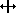
- Modifiqueu les altres columnes tot respectant l’amplada total de la taula.
5. Poseu un títol a l’inici del document.
- Situeu-vos a l’inici del document (amb Crtl+Inici).
- Premeu un parell de vegades la tecla RETORN.
- Torneu a prémer Ctrl+Inici.
- Escriviu Països i Capitals del món i adjudiqueu-li l’estil Encapçalament 1.
6. Deseu el document amb el nom paisos.odt.
Vegeiu la solució al final de l’activitat.
Modificació del format d’una taula
Des del menú Taula es pot modificar la taula creada per afegir/eliminar columnes o files, per modificar l’amplada/alçada de les columnes o files, etc. Algunes d’aquestes accions també es poden fer des del menú contextual del ratolí o amb l’ajut de les eines de la barra d’eines Taula (Visualitza \ Barra d’eines \ Taula). Les opcions possibles varien en funció de la zona de selecció.
Eliminar files o columnes
Es poden eliminar files o columnes d’una taula des del menú contextual (botó dret del ratolí) o des del menú Taula.
- Menú contextual: Fila o columna \ Suprimeix
- Menú Taula \ Suprimeix \ Files o Columnes
- Barra d’eines Taula
- Elimina fila: 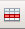
- Elimina columna:
- 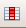
Inserir files o columnes
- Menú contextual: Fila o columna \ Insereix
- 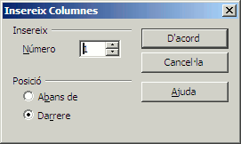
- Caldrà establir el nombre de files o de columnes a inserir.
- Caldrà escollir la posició on s’inserirà la fila o columna: Abans de o Darrere.
- S’haurà de prémer el botó D’acord.
- Menú Taula \ Insereix \ Files o Columnes
- Com en el cas anterior, cal establir el nombre de files o columnes a inserir, cal escollir la posició on s’inseriran i cal prémer el botó D’acord.
- Barra d’eines Taula
- Insereix fila
- 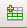
- Insereix columna
Fusionar cel·les
L’acció de fusionar cel·les consisteix en convertir les cel·les seleccionades en una sola cel·la tot conservant-ne el contingut. Primer cal seleccionar les cel·les a fusionar.
- Menú contextual: Cel·la \ Fusiona.
- Menú Taula: Taula \ Fusiona les cel·les.
- Barra d’eines Taula: Fusiona les cel·les
- 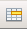
Dividir cel·les
Permet dividir una cel·la en un nombre de files i columnes especificat.
- Menú contextual: Cel·la \ Divideix…
- Barra d’eines: Taula \ Divideix les cel·les.
- Barra d’eines Taula: Divideix les cel·les
- 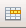
En tots els casos s’obtindrà una finestra on es podrà determinar el nombre de divisions i si es faran en vertical o en horitzontal.
Distribuir files/columnes uniformement
Permet assignar uniformement l’alçada o l’amplada a totes les cel·les seleccionades.
- Menú contextual:
- Columna \ Espaia equitativament
- Fila \ Espaia equitativament
En la següent animació podeu comprovar el procediment per realitzar algunes de les accions que acabem de veure:
Alçada i amplada de les cel·les i espai entre columnes
L’alçada i l’amplada també es poden modificar mitjançant el ratolí arrossegant una línia de la retícula fins aconseguir la modificació desitjada.
Ordenar files o columnes
Ordena les files de les cel·les seleccionades segons continguin informació textual o numèrica. L’ordenació pot ser ascendent o descendent.
- Menú Taula: Taula \ Ordena…
- El quadre de diàleg permet establir quines seran les condicions per a l’ordenació.
Dividir la taula
En activar l’opció de dividir una taula aquesta es converteix en dues taules: en suprimir el caràcter de salt de línia que les separa es tornen a unir.
- Menú contextual: Divideix la taula.
- Menú Taula: Divideix la taula.
- En qualsevol cas, es poden escollir les condicions referents a la capçalera de la segona part de la taula que s’obtindrà.
1. Recupereu el document que heu guardat: paisos.odt.
2. Situeu el cursor a l’última columna i inseriu-ne una.
3. Poseu-li per títol: Situació.
- En aquesta columna escriureu si el país és costaner o interior.
4. Espaiareu equitativament les columnes.
5. Inseriu com a mínim 5 files més.
- En aquestes files afegireu 5 països amb les seves dades corresponents.
6. Ordeneu les dades de la taula segons el continent on es troben.
7. Guardeu el document amb el nom capitals.odt.
Vegeu la solució al final de l’activitat.
Modificació de les línies i dels colors de les cel·les
La forma més senzilla de modificar el format i el color dels contorns i el color de fons de les cel·les és utilitzar les eines de la barra d’eines Taula.
- L’eina Vorespermet decidir quines de les línies del contorn de la cel·la o cel·les seleccionades quedaran dibuixades.
- L’eina Color de la vora permet canviar el color de les línies de contorn d’una cel·la o de les cel·les seleccionades.
- L’eina Estil de la líniapermet modificar el disseny de les línies de contorn de la cel·la o cel·les seleccionades.
Si traiem els contorns de les cel·les de la taula, continuarem visualitzant a la pantalla les línies de divisió de les cel·les. Aquestes línies serveixen de guia però no s’imprimeixen. Si no les volem visualitzar, es poden desactivar des de l’opció Taula \ Límits de la taula.
Per poder canviar el fons d’una o diverses cel·les seleccionades heu d’utilitzar l’eina Color de fons
1. Recupereu el document capitals.odt.
2. Poseu els països del continent europeu amb un fons de color blau 7, els del continent asiàtic amb un de color verd 8, els del continent americà amb un de color vermell 5, els del continent africà amb un de color groc 3, els d’Oceania amb un de color sun 4.
- Seleccioneu les files dels països del continent europeu.
- Activeu l’eina color de fons i seleccioneu el color blau 7.
- Seguiu el mateix procediment per a la resta de països.
3. Apliqueu línies a totes les cel·les de la taula. Proveu les diferents possibilitats d’aplicar línies.
- Feu clic en qualsevol cel·la de la taula.
- Seleccioneu Taula \ Selecciona \ Taula.
- Utilitzeu les eines de la barra d’eines Taula per tal de:
- Establir el grup de divisòries visibles:Vores
- Establir el color de les divisòries: Color de la vora
- Establir el gruix i disseny de les divisòries:Estil de la línia
- A Visualització prèvia de la pàgina, podeu observar l’aspecte que tindrà la vostra taula.
4. Guardeu el document amb el nom capitals_color.odt.
Convertir text en taula
Els objectius d’aquesta activitat són els següents:
- Convertir text en taula.
- Convertir una taula en text.
Conversió d’un text en taula
El LibreOffice Writer permet convertir un text en una taula: les tabulacions i altres caràcters serviran per definir les columnes, i els paràgrafs per definir les files.
Per convertir un text en una taula hi ha dues maneres de fer-ho:
- Creant una taula.
- Convertint el text.
Creant una taula
Una vegada seleccionat el text, cal activar la icona de creació de taules o l’opció Taula \ Insereix \ Taula…
Si s’utilitza aquesta opció, el caràcter per a la definició del nombre de columnes és la tabulació.
Convertint el text
Una vegada seleccionat el text, cal escollir l’opció Taula \ Converteix \ Text a taula…
El caràcter per a la definició del nombre de columnes es pot modificar en el quadre de diàleg.
Conversió d’una taula en text
El procés contrari de convertir una taula en text també és possible.
Per aconseguir-ho cal seleccionar la taula i activar l’opció Taula \ Converteix \ Taula a text… i escollir el tipus de separador tal i com mostra el quadre de diàleg.
Desenvolupament de l’activitat
Apliqueu els continguts explicats a l’activitat següent:
1. Recupereu el document i deseu-lo en la vostra carpeta de treball.
2. Obriu-lo i afegiu les dades de cinc factures més, separades per tabulacions.
- Introduïu les dades, separant-les cada una de la següent, amb la tecla de tabulació; no importa que no quedin encolumnades; el que és important és que només hi hagi un sol salt de tabulació entre les dades. Acabeu les línies amb Retorn.
Conversió de text a taula
1. Seleccioneu tot el text que hi ha escrit.
- Premeu l’eina Taula:
2. Observeu com el text s’ha convertit en taula.
3. Ajusteu l’amplada de les columnes amb ajut del ratolí.
4. Deseu el fitxer amb el nom factures_taula.odt, però no cal que el tanqueu.
Conversió de taula en text
- Seleccioneu tota la taula que heu acabat de crear.
- Seleccioneu Taula \ Converteix \ Taula a text.
- Seleccioneu Tabulador.
- Premeu D’acord.
- Observeu com la taula s’ha convertit en text separat per tabuladors.
- Tanqueu el document sense desar els canvis.
Cercar i reemplaçar
L’objectiu d’aquesta activitat és aprendre a utilitzar les opcions de cerca i substitució en un document.
L’opció Cerca i reemplaça del menú Edita permet realitzar cerques i reemplaçaments de textos en un document; permet trobar/reemplaçar paraules concretes, variacions d’una paraula, formats específics, independentment de les paraules, o paraules en un format específic. Per a la cerca o reemplaçament també es pot utilitzar l’eina Cerca i reemplaça de la barra d’eines Estàndard o prémer la combinació de tecles Ctrl+F.
Una vegada iniciada la cerca es pot tancar el quadre de diàleg corresponent per facilitar la lectura de les aparicions; per iniciar noves cerques del mateix terme cal prémer les tecles Ctrl+Majúscules+F.
Si en iniciar la cerca hi ha un text seleccionat, el LibreOffice Writer només cercarà en la selecció.
El botó Més opcions / Menys opcions del quadre de diàleg permet commutar entre la visualització de totes o només algunes de les opcions de cerca.
L’acció de cercar/reemplaçar es pot fer des de la posició del cursor cap endavant o cap enrere (opció Endarrere activada), i, en arribar a l’extrem del document, es pot continuar o no des de l’altre extrem. La modalitat Cercar-ho tot cerca i selecciona totes les aparicions del text o del format, motiu de la cerca.
Cas de voler cercar i reemplaçar un tipus de format o atribut, cal escollir-lo i, sense entrar cap text de cerca, iniciar-la. Si el que es vol és cercar/reemplaçar un terme amb un tipus de format o atributs, caldrà entrar el text i, després d’escollir el format i atributs, iniciar la cerca/reemplaça.
En acabar el procés, el LibreOffice Writer informa del nombre de reemplaçaments realitzats.
1. Recupereu el fitxer
2. Formateu el document:
- Seleccioneu tot el document.
- Amb Format \ Caràcter… adjudiqueu idioma català a tot el document.
3. Poseu com a capçalera del document Organització de les entitats bancàries i doneu-li format amb lletra Verdana de 10 punts i Cursiva.
4. Al peu de pàgina poseu el vostre nom alineat a la dreta i apliqueu-li format amb lletra Arial de 10 punts.
5. Feu les següents cerques i reemplaçaments:
- Canvieu gestors per directors.
- Canvieu empreses per companyies.
- Canvieu tasques per activitats.
- Obriu el menú de Cerca i reemplaça.
- Seleccioneu l’opció Només paraules completes.
- A cerca, escriviu gestors; a Reemplaça, escriviu directors.
- Premeu el botó Reemplaça-ho tot.
- Procediu de la mateixa forma amb totes les paraules.
- En acabar, premeu el botó Tanca.
6. A partir de la funció cercar i reemplaçar canvieu els estils de paràgraf del document segons s’indica tot seguit:
- Encapçalament 1 per Encapçalament 2.
- Encapçalament 4 per Encapçalament 5.
- Sagnat de la llista per Llista 3.
- Premeu Crtl+F per activar el diàleg Cerca i reemplaça.
- Esborreu, si n’hi ha, els textos de cerca utilitzats anteriorment.
- Premeu el botó Més opcions.
- Activeu la casella Cerca estils. Si desplegueu les caselles Cerca i Reemplaça amb… tindreu accés als diferents estils de paràgraf.
- A Cerca, seleccioneu l’estil Encapçalament 1.
- A Reemplaça amb …, cerqueu i seleccioneu Encapçalament 2.
- Premeu el botó Reemplaça-ho tot.
- Procediu de la mateixa manera amb la resta d’estils.
- En acabar, premeu el botó Tanca.
7. Guardeu el document amb el nom cerca.odt.
Exportació de documents a altres formats
L’objectiu d’aquesta activitat és aprendre a exportar un document a format pdf i a format xhtml.
El LibreOffice Writer té l’opció d’exportar el document a format pdf, o també a format xhtml (per a pàgina web).
Exportar a pdf
Per exportar un document a pdf seguirem els següents passos:
1. Seleccioneu Fitxer \ Exporta.
2. Poseu el nom al fitxer.
3. Escolliu el format pdf.
4. Escolliu la carpeta on voleu guardar-lo.
5. Cliqueu Desa.
6. Sortirà un altre menú on podreu escollir diverses opcions sobre les característiques del document.
A la pestanya General \ Imatges, podeu definir el tipus de compressió de les imatges, la seva qualitat.
A la pestanya Vista Inicial, podeu dir-li com voleu veure el document quan s’obri. A Ampliació, si seleccioneu Ajusta a la finestra, mostrarà tota la pàgina sencera.
A la pestanya Interfície d’usuari, podeu definir com voleu que s’obri el document amb l’Acrobat.
A la pestanya Enllaços, podeu definir com es comportaran els enllaços del document.
A la pestanya Seguretat, podeu posar una contrasenya per obrir el document. Si activeu Restringeix els permisos, haureu de posar també contrasenya i confirmar-la, i podreu modificar les opcions de sota: impressió, canvis en el document, permetre o no copiar continguts…
7. Quan acabeu cliqueu Exporta.
Per exportar a pdf també es pot utilitzar la icona Exporta directament a pdf
1. Recupereu el document capitals_color.odt o cliqueu el següent enllaç:
2. Exporteu-lo a pdf. Podeu fer-ho des del menú o des de la icona
3. Aneu a la carpeta on l’heu guardat i obriu-lo per tal de comprovar com ha quedat.
Exportar a XHTML
Per exportar a pàgina web (format html) ho podem fer de la manera següent:
1. Accediu a Fitxer \ Exporta.
2. Escriviu el nom del fitxer.
3. Desplegueu el format de fitxer i escolliu XHTML.
4. Escolliu la carpeta on voleu guardar-lo.
5. Cliqueu Desa.
Per tal de fer una pàgina web, en lloc d’exportar el document podem seleccionar Anomena i desa com…
1. Escriviu el nom del document.
2. Escolliu el tipus de fitxer: Document HTML (LibreOffice Writer)(.html).
3. Escolliu la carpeta on voleu guardar-lo.
4. Feu clic a Desa.
5. Torneu a obrir el document capitals_color.odt o cliqueu el següent enllaç:
6. Guardeu-lo com a pàgina web.
- Menú Fitxer \ Anomena i desa…
- Escriviu el nom capitals_web.
- Escolliu el tipus de fitxer: Document HTML.
- Feu clic a Desa.
7. Torneu a obrir el mateix document capitals_color.odt.
8. Exporteu-lo a XHTML.
- Poseu-li per nom capitals_exportat.odt.
- Escolliu com a format de fitxer XHTML.
- Cliqueu Desa.
Aneu a la carpeta on els heu guardat i mireu les diferències que hi ha entre guardar-lo com a pàgina web o exportar-lo com a XHTML.
Impressió de documents
L’objectiu d’aquesta activitat és conèixer les principals opcions d’impressió.
Per tal d’imprimir un document de l’àrea de treball, cal activar el menú Fitxer \ Imprimeix… o la icona per imprimir Imprimeix el fitxer directament:
Des del menú, la funció d’impressió presenta un quadre de diàleg que permet escollir la impressora de destinació, el nombre de còpies i la pàgina o pàgines a imprimir:
1. Impressora:
- Nom. El nom de la impressora predeterminada per a la sessió de treball.
- Propietats. Opcions d’impressió del Windows per a la impressora seleccionada.
- Imprimir a un arxiu. Permet imprimir en un fitxer en comptes de fer-ho a la impressora.
2. Àrea d’impressió:
- Tot. Imprimeix tot el document.
- Pàgines. Permet imprimir les pàgines especificades, per exemple 2; 4-6; 8. Per defecte, LibreOffice Writer imprimirà el número de pàgina actual.
- Selecció. Si prèviament s’ha seleccionat una porció del text, permet imprimir només el text seleccionat.
3. Còpies:
- Nombre de còpies. Vegades que es realitzarà la impressió.
- Reuneix. S’imprimeix tot el document i, a continuació, es repeteix el procés tantes vegades com nombre de còpies s’han especificat. Si l’opció està desactivada s’imprimeix cada pàgina tantes vegades com el nombre de còpies indica. Per defecte, l’opció Reuneix està desactivada.
4. Opcions de la impressora:
Permet escollir opcions d’impressió quant al contingut, pàgines i notes. Les caselles habilitades o deshabilitades indiquen què s’inclourà o no en el document imprès.
1. Recupereu el fitxer distribucio2.odt o cliqueu el següent enllaç:
2. Imprimiu-lo.
Activeu l’eina Imprimir o seleccioneu Fitxer \ Imprimeix…
Tabulacions, columnes i partició de mots
L’objectiu d’aquesta activitat és conèixer diversos elements que permeten modificar el format dels documents.
Tabulacions
Una forma de presentació d’informació en columnes, alternativa a les taules, són les tabulacions. Una tabulació és un caràcter especial que s’insereix prement la tecla Tab:
Creeu un nou document de text amb LibreOffice Writer. Tot seguit seleccioneu el text següent i enganxeu-l’hi. Cal que utilitzeu l’opció Edita \ Enganxament especial \ Text sense format:
Població segons nivell d’instrucció. Recomptes. Població de 10 anys i més. Catalunya. Distribució per comarques. Any 2001.
Font: Idescat. Banc d’estadístiques de municipis i comarques. www.idescat.net.
| No sap llegir o escriure | % | Total | |
|---|---|---|---|
| Alt Camp | 812 | 2,53 | 32082 |
| Alt Empordà | 1998 | 2,24 | 89349 |
| Alt Penedès | 2428 | 3,34 | 72609 |
| Alt Urgell | 236 | 1,36 | 17381 |
| Alta Ribagorça | 56 | 1,75 | 3202 |
| Anoia | 1922 | 2,29 | 83893 |
| Bages | 3150 | 2,24 | 140359 |
| Baix Camp | 2958 | 2,28 | 129538 |
| Baix Ebre | 1417 | 2,35 | 60295 |
| Baix Empordà | 2275 | 2,46 | 92617 |
| Baix Llobregat | 17617 | 2,85 | 618834 |
| Baix Penedès | 1242 | 2,26 | 55026 |
| Barcelonès | 37546 | 1,96 | 1916434 |
| Berguedà | 566 | 1,63 | 34808 |
| Cerdanya | 175 | 1,36 | 12836 |
| Conca de Barberà | 217 | 1,28 | 16933 |
| Garraf | 1972 | 2,04 | 96571 |
| Garrigues | 196 | 1,12 | 17575 |
| Garrotxa | 906 | 2,09 | 43348 |
| Gironès | 2802 | 2,3 | 121871 |
| Maresme | 8158 | 2,57 | 317722 |
| Montsià | 1297 | 2,48 | 52386 |
| Noguera | 539 | 1,71 | 31606 |
| Osona | 2619 | 2,27 | 115579 |
| Pallars Jussà | 126 | 1,14 | 11026 |
| Pallars Sobirà | 47 | 0,83 | 5674 |
| Pla d’Urgell | 463 | 1,72 | 26946 |
| Pla de l’Estany | 572 | 2,62 | 21805 |
| Priorat | 106 | 1,24 | 8540 |
| Ribera d’Ebre | 352 | 1,77 | 19870 |
| Ripollès | 512 | 2,16 | 23723 |
| Segarra | 58 | 1,56 | 16591 |
| Segrià | 3086 | 2,06 | 149821 |
| Selva | 2547 | 2,42 | 105363 |
| Solsonès | 213 | 2,07 | 10284 |
| Tarragonès | 3925 | 2,4 | 163577 |
| Terra Alta | 189 | 1,66 | 11368 |
| Urgell | 356 | 1,27 | 28049 |
| Val d’Aran | 54 | 0,78 | 6890 |
| Vallès Oc. | 17115 | 2,61 | 656106 |
| Vallès Oriental | 6965 | 2,44 | 285933 |
| Catalunya | 129990 | 2,27 | 5724420 |
A partir d’aquest moment, teniu dues formes de tabular el text inserit, a ull o de forma exacta.
Formatat de la tabulació mitjançant el regle
Aquesta és una forma fàcil però poc precisa de formatar una pàgina que contingui tabulacions.
En primer lloc, caldrà seleccionar, mitjançant el selector que hi ha a la zona on es troben el regle vertical i l’horitzontal, el tipus de tabulació que es vol col·locar. N’hi ha quatre de possibles:
- Tabulació esquerra: el text o els nombres que hi hagi després de la tabulació, apareixeran arrenglerats per l’esquerra.
- Tabulació dreta: el text o els nombres que hi hagi després de la tabulació, apareixeran arrenglerats per la dreta.
- Tabulació decimal: els nombres apareixeran arrenglerats a la dreta per la seva coma, independentment de les xifres decimals que tinguin.
- Tabulació centrada: el text o els nombres que hi hagi després de la tabulació, apareixeran arrenglerats per la seva posició centrada.
Per començar, seleccioneu tot el text que heu copiat menys el títol (els dos primers paràgrafs).
Clicant el regle horitzontal, poseu una tabulació dreta a la posició 6, una tabulació decimal a la posició 10 i una altra de dreta a la posició 14.
Observeu com el text que heu copiat ha quedat arrenglerat en columnes.
Si voleu moure una tabulació una vegada està posada, només cal que la seleccioneu amb el ratolí i l’arrossegueu a l’esquerra o a la dreta.
Si voleu eliminar una tabulació posada per error, només cal que la seleccioneu amb el ratolí i l’arrossegueu cap avall, fora del regle.
Vegeu la solució al final de l’activitat.
Formatat de la tabulació mitjançant les propietats del paràgraf
Creeu un document nou i copieu-hi el mateix contingut que abans.
Seleccioneu tot el text que heu copiat menys el títol (els dos primers paràgrafs).
Accediu al quadre de diàleg de propietats de paràgraf, des de Format \ Paràgraf… i aneu a la pestanya Tabuladors.
Escriviu o seleccioneu:
- 6 a Posició, en sortir de la casella, apareixerà escrit 6,00 cm, tot depenent de la configuració del sistema operatiu de treball.
- Dreta a Tipus de tabulació.
- ……… a Caràcter d’emplenament, això farà que apareguin punts als espais en blanc que deixen les tabulacions, tot facilitant-ne la llegibilitat.
Cliqueu el botó Nou.
Repetiu el procés amb …
- 10, Decimal (Caràcter ”,”) i ………
- 14, Dreta i ………
Observeu les diferències amb l’anterior operativa i valoreu la possibilitat de fixar exactament el punt on es vol fer aparèixer la tabulació.
Vegeu la solució al final de l’activitat.
Format de columnes periodístiques
Formatar una pàgina en columnes és un dels recursos més emprats en el món de l’edició en paper.
LibreOffice Writer presenta, al menú Format, totes les eines necessàries per tal d’aconseguir aquesta presentació.
Recupereu el document columnes.odt.
Seleccioneu tot el el document, a excepció del títol, i accediu a Format \ Columnes…
Al quadre de diàleg que apareix, establiu dues columnes i un espaiat entre columnes de mig centímetre. Si no ho feu així, el text apareixerà massa enganxat i la lectura es farà difícil:
Proveu de modificar el format del títol i de repetir el procés, però afegint una línia de separació entre les columnes o un emmarcat de les mateixes.
Vegeu la solució al final de l’activitat.
Partició de mots
Un processador de text va emplenant les línies de text a mesura que es va escrivint i, per defecte, si una paraula no cap a la línia la posa sencera a la línia següent. Per això, si la justificació del text és a l’esquerra, queden espais a la dreta fins arribar al marge de la pàgina i, si la justificació és per l’esquerra i la dreta a la vegada, el programa augmenta la separació entre mots deixant més espais en blanc entremig.
Si el document que s’està elaborant només té una columna, la quantitat d’espais blancs no és excessiva i queda dissimulada, però si el text es divideix en dues o tres columnes, pot ser que es notin massa aquestes separacions entre paraules.
Per tal d’evitar aquest efecte, es pot recórrer a la partició de mots, a fer que el LibreOffice Writer divideixi les paraules que hi ha a l’acabament de les línies posant guions. Aquesta divisió es fa per síl·labes, segons les normes ortogràfiques de la llengua del document.
Continueu amb el fitxer columnes o cliqueu el següent enllaç:
Seleccioneu el text de les dues columnes i accediu a Eines \ Llengua \ Partició de mots ….
Aquesta activació manual de la partició de mots del text entrat fa que vagi apareixent un quadre de confirmació de la posició on es vol fer aparèixer el guionet.
Les possibles posicions dels guionets estan marcades amb el signe =, i la posició seleccionada està marcada amb el cursor. Les fletxes esquerra i dreta seleccionaran la separació sil·làbica anterior o posterior.
Quant a les opcions que es plantegen:
- Parteix els mots: divideix la paraula seleccionada per la posició proposada i passa a la paraula següent.
- Cancel·la: cancel·la el procés de divisió de paraules.
- Següent: salta a la paraula següent sense dividir la paraula que es proposava.
- Suprimeix: cas que la paraula seleccionada ja estigués dividida, elimina el guionet i torna a deixar la paraula sencera.
- Ajuda: fa aparèixer les pantalles d’ajuda del LibreOffice Writer adaptades al context.
Per altra banda, si mentre esteu escrivint el document voleu que una paraula es divideixi i voleu estalviar-vos tot aquest procés, només cal que inseriu un guionet personalitzat. Això s’aconsegueix prement simultàniament les tecles Ctrl + - (Control + guionet).
Ara bé, la forma com LibreOffice Writer actua a l’hora de partir les paraules en guionets depèn de la configuració general del programa i de la configuració del format dels paràgrafs:
A la configuració general, Eines \ Opcions … \ LibreOffice Writer \ Ajudes a la formatació, la casella Guionets personalitzats fa que es mostrin o no els guionets personalitzats que l’autor del document ha anat posant.
La divisió de les paraules mitjançant la inserció de guionets es pot fer de forma manual, tal i com heu fet a la pràctica o sigui activant-la quan l’usuari així ho decideix, o es pot realitzar de forma automàtica, per part del propi programa.
En aquest cas, caldrà actuar sobre la configuració dels paràgrafs.
Si es vol que la divisió automàtica es faci només en un paràgraf concret, caldrà seleccionar Format \ Paràgraf… i, a la pestanya Flux del text, activar la casella Partició de mots \ Automàtic.
Es poden configurar tres aspectes:
- Quants caràcters es vol permetre que apareguin sols al final de la línia.
- Quants caràcters es vol permetre que apareguin sols a l’inici de la nova línia.
- Quin nombre màxim de línies de text consecutives es vol permetre que acabin en guionet.
Si es vol que la divisió sil·làbica es faci de forma automàtica en més d’un paràgraf, caldrà modificar l’estil del paràgraf o crear-ne un de nou. Aneu, per tant, al menú flotant d’estils i formatació clicant la icona
A continuació, poseu-vos damunt l’estil que voleu alterar i, clicant amb el botó dret del ratolí, seleccioneu Modifica…
Al quadre de diàleg que apareix, seleccioneu la pestanya Flux del text i marqueu la casella Partició de mots \ Automàtic.
Els marcs
L’objectiu d’aquesta activitat és aprendre a crear i a modificar marcs i a utilitzar el fontwork.
Marcs
Un marc és una àrea del document, definida per l’usuari, que conté text i imatges que es volen tractar com un objecte diferenciat de la resta. Al text que conté el marc se li pot donar un format diferenciat de la resta del document, i al marc en si també. Per altra banda, es poden vincular dos marcs per tal que el text que no cap en un flueixi cap al segon.
Crear un marc
Hi ha diverses maneres de crear un marc.
- Activant Insereix \ Marc… i confirmant les opcions que es plantegen per defecte, que es podran modificar més endavant.
- Fent aparèixer la barra d’eines Insereix des de Visualitza \ Barra d’eines … \ Insereix i seleccionant la icona corresponent a Insereix marc manualment.En aquest cas, si cliqueu a la fletxa que hi ha a la dreta de la icona, podreu seleccionar des del principi el nombre de columnes de text que voleu que hi hagi al marc.
Una vegada creat el marc, se li pot canviar la mida clicant sobre els punts sensibles que apareixen en seleccionar-lo i arrossegant-los.
Moure i ancorar un marc
Una vegada creat el marc, es pot deixar a la seva posició original, però el més habitual és moure’l a una altra localització. Només cal seleccionar-lo amb el ratolí i arrossegar-lo al lloc que més ens interessi.
Però el document va creixent i pot interessar que el marc es vagi desplaçant. Així, hi ha quatre opcions de deixar ancorat el marc:
- Àncora a la pàgina: Fixa el marc a la pàgina actual.
- Àncora al paràgraf: Fixa el text al paràgraf actual. Si aquest canvia de pàgina, el marc també ho farà. És l’opció que es pren per defecte.
- Àncora al caràcter: Lliga el marc a un caràcter concret. Es desplaçarà amb ell.
- Àncora com a caràcter: Fa que el marc es comporti com un caràcter. Per tant, l’alçada de la línia on hi ha el marc serà l’alçada del marc.
Vincular dos marcs
També es poden vincular dos marcs de LibreOffice Writer per tal que el text que no cap al primer flueixi cap al segon. Per fer-ho, cal seguir aquests passos:
1. Seleccioneu el primer marc clicant la vora amb el ratolí.
2. Cliqueu la icona Enllaça els marcs.
3. Cliqueu el marc que ha de quedar vinculat amb el primer.
Quan s’estableix una vinculació entre dos marcs, LibreOffice Writer mostra una línia que representa l’enllaç.
Per tal de desfer una vinculació, cal tenir-ne un de seleccionat i clicar la icona Desenllaça els marcs.
La vinculació de marcs té algunes limitacions. Només es poden vincular marcs si:
- el segon està buit
- tant el primer com el segon marc no estan ja vinculats com a segons amb un altre
- tots dos són a la mateixa secció
- un marc no està dins de l’altre
Per altra banda, encara que només s’hagi parlat de dos marcs, cal tenir clar que la cadena pot continuar i el segon es pot vincular a un tercer, el tercer a un quart, etc.
Formatar un marc
El formatat complet del marc s’obté mitjançant el quadre de diàleg de les propietats de l’objecte, seleccionant Format \ Marc… o clicant l’opció Propietats del marc.
El primer bloc permet concretar al detall la mida i posició del marc, així com també l’ancoratge.
El segon bloc permet posar un nom al marc i enllaçar-lo amb un de previ i un de posterior, a la vegada que es pot determinar si es vol protegir el seu contingut o no.
El tercer bloc facilita la concreció de com ha de fluir el text extern al marc al seu voltant i de quina separació hi ha d’haver entre aquest text i la vora del marc.
El cinquè bloc permet especificar com ha de ser la vora del marc i quina distància hi ha d’haver entre aquesta vora i el text del contingut.
El sisè bloc permet concretar quin color ha de tenir el fons del marc.
Pel que fa al setè bloc, permet configurar la distribució del text interior al marc en columnes periodístiques.
Als aspectes més rellevants del format del marc, s’hi pot accedir, també, mitjançant el menú de context que apareix en clicar amb el botó dret del ratolí damunt el marc, quan aquest està seleccionat:

- Recupereu el documentproduccio.odt ( 28.5 KB )
- Formateu el document en dues columnes periodístiques amb una separació de 0,5 cm.
- Modifiqueu l’estil de paràgraf per defecte per tal que l’alineació sigui Justificada i faci la partició de mots de forma automàtica.
- Copieu l’estil per defecte creant-ne un de nou, que podeu anomenar Introducció, que tingui, com a única variant, la lletra en cursiva. Apliqueu aquest nou estil als dos primers paràgrafs i a les dues últimes línies que contenen la referència del document.
- Assigneu al títol l’estil Encapçalament 2.
- Poseu en negreta els títols que hi ha a l’inici d’alguns dels paràgrafs.
- Creeu un marc a l’inici de la pàgina que n’ocupi tota l’amplada, les dades de la pestanya Tipus han de ser les que figuren a continuació.
- Retalleu el text del títol i el dels dos primers paràgrafs i copieu-lo al marc que acabeu de crear.
- Creeu tres nous marcs i distribuïu-los al llarg del document, centrats a l’horitzontal. Tindran una amplada de 5,60 cm i la llargada dependrà del contingut. Hi haureu d’incorporar els següents textos:
- Marc 1: La globalització és un canvi social basat en l’increment de la interconnexió entre diferents societats.
- Marc 2: El liberalisme està a favor d’aquests canvis i sosté que el comerç mundial afavoreix tota la Humanitat a llarg termini.
- Marc 3: Els grups antiglobalitzadors sostenen que és una font d’injustícia en l’àmbit internacional, i que no promou un aprofitament sostenible dels recursos naturals.
- Les dades de la pestanya Tipus, per al primer marc, hauran de ser similars a les següents:
- Cerqueu l’estil de paràgraf Contingut del marc i modifiqueu-lo per tal de posar lletra Arial de cos 14 punts i alineació Centrada. Apliqueu aquest estil a tot el contingut del marc.
- Poseu de color de fons Gris blavós a tots els marcs del document.
Fontwork
FontWork és un subprograma extern de LibreOffice i comú a tots els mòduls de l’aplicació, que permet fer cartells anunciadors força clars i de forma ràpida. Els títols que genera són tractats com un objecte particular i no formen part del text, o bé en formen part de la mateixa manera com en forma part una fotografia inserida en una pàgina d’un document.
Per tal de crear un objecte Fontwork, cal tenir visible la barra d’eines de Dibuix que podeu activar des de Visualitza \ Barra d’eines \ Dibuix, i que apareix, per defecte, al capdavall de la pantalla.
- A la barra d’eines Dibuix, feu clic a la icona Galeria Fontwork.
- Us apareixerà el quadre de diàleg Galeria de Fontwork. Seleccioneu l’estil que més us agradi i cliqueu D’acord. Veureu que, al document, s’hi insereix un objecte Fontwork del tipus que heu seleccionat.
- Si feu un doble clic damunt l’objecte podreu modificar-ne el text (per defecte, apareix Fontwork) i, per exemple, podeu escriure ”Promoció de la setmana”. Acabareu l’edició si premeu la tecla Esc o cliqueu fora del text editat.
- Si teniu seleccionat l’objecte Fontwork, veureu que apareix una barra d’eines flotant més. Mitjançant aquesta barra d’eines es poden concretar molts petits detalls que complementen la presentació del text.
- Si seleccioneu l’objecte, el podreu desplaçar per la pàgina.
- Quan l’objecte deixa d’estar seleccionat, desapareix la barra d’eines Fontwork.
Recursos gràfics
L’objectiu d’aquesta activitat és conèixer els principals recursos gràfics que incorpora l’Open Office.org Writer.
Imatges i marques d’aigua
LibreOffice Writer permet la inserció de tres tipus d’imatges, depenent del seu origen:
- Imatges escannejades (cal que hi hagi un escànner configurat al sistema).
- Imatges importades des d’un fitxer gràfic.
- Imatges enganxades des de la memòria temporal, que prèviament s’hauran copiat des d’un altre origen.
En tots els casos, la imatge s’insereix al document com un objecte i es poden manipular les seves propietats.
1. Recupereu el document ubicacions.odt:
2. Situeu-vos a l’apartat Prestatgeries convencionals i inseriu-hi el fitxer convencionals.jpg des d’Insereix \ Imatge \ Des d’un fitxer….
Descarregueu-vos aquí l’arxiu comprimit convencionals.zip:
3. Feu la imatge més petita, actuant sobre els punts sensibles, però sense deformar-ne les proporcions. És a dir, actueu sobre els punts de les cantonades i no sobre els punts centrats a les vores.
4. Col·loqueu la imatge al lloc que més us agradi.
5. Ajusteu la posició i la separació respecte al text circumdant des de Menú de context \ Gràfic… \ Ajusta.
6. Repetiu el procés amb les imatges següents, col·locant-les en el paràgraf corresponent. Descarregueu-vos aquí els arxius comprimits:
- compactes.zip ( 13.1 KB )
- dinamiques.zip ( 2.3 MB )
- cantilever.zip ( 6.9 KB )
De vegades, pot interessar posar una marca d’aigua als fulls impresos. LibreOffice Writer permet fer-ho d’una forma molt fàcil.
Obriu el fitxer ubicacions.odt amb el qual heu estat treballant o recupereu-lo des de l’enllaç anterior i inseriu-hi el fitxer IOC_blanc.jpg com una marca d’aigua.
Descarregueu-vos aquí l’arxiu comprimit:
1. Aneu al capdamunt del document.
2. Seleccioneu Insereix \ Imatge \ Des d’un fitxer… i trieu IOC_blanc.jpg
3. Ancoreu-lo a la pàgina des de Menú de context \ Àncora \ A la pàgina.
4. Alineeu-lo al mig des de Menú de context \ Alineament \ Base al mig.
5. Ajusteu-lo en segon pla des de Menú de context \ Ajusta \ En segon pla.
6. Per acabar, seleccioneu mode gràfic Filigrana a la Barra d’eines Imatge.
Vegeu la solució al final de l’activitat.
El mòdul de dibuix
Per poder accedir a les eines de dibuix de LibreOffice Writer, cal tenir visible la barra d’eines Dibuix ja sigui seleccionant-la des de Visualitza \ Barra d’eines \ Dibuix, o bé clicant la icona següent de la barra d’eines Estàndard:
- Selecciona. Permet seleccionar objectes. Si voleu seleccionar un sol objecte, senzillament cliqueu-hi damunt. Si en voleu seleccionar més d’un, traceu una àrea que els englobi. Si voleu afegir un objecte més a la selecció, cliqueu-hi damunt mentre manteniu polsada la tecla Majús. Quan es tenen diversos objectes seleccionats, se’ls pot Agrupar i, llavors, es comporten com si en fossin un de sol.
- Línia. Dibuixarà una línia recta quan arrossegueu el cursor per la pàgina actual. Si, simultàniament, premeu la tecla Majús, la línia es dibuixarà vertical o horitzontal o amb una inclinació de 45º. Una vegada dibuixada la línia, es poden modificar els seus atributs. Fent-hi un doble clic al damunt, podreu afegir text arrapat al traç. Per fer desaparèixer la ratlla, poseu-hi estil Invisible.
- Rectangle. Dibuixarà un rectangle quan cliqueu i arrossegueu el cursor per la pàgina actual. Si, simultàniament, premeu la tecla Majús, dibuixareu un quadrat. Emprant les eines d’emplenament d’àrea de la barra d’eines Propietats de l’objecte de dibuixpodreu canviar el color del rectangle.
- El·lipse. Dibuixarà una el·lipse quan cliqueu i arrossegueu el cursor per la pàgina actual. Si, simultàniament, premeu la tecla Majús, dibuixareu un cercle. Emprant les eines d’emplenament d’àrea de la barra d’eines Propietats de l’objecte de dibuix podreu canviar el color de l’el·lipse.
- Polígon. La barra d’eines no mostra aquesta eina per defecte, cal afegir-la posteriorment. Dibuixarà un polígon format per diversos segments rectes units per un extrem. Actueu com si volguéssiu crear una línia recta i, quan feu clic per acabar-la, us deixarà traçar el segment següent. Acabareu el procés fent un doble clic damunt del punt inicial del polígon. Recordeu que si manteniu premuda la tecla Majús només fareu línies amb una variació d’inclinació de 45º. Si una vegada acabat el polígon el voleu concretar millor, podeu activar el mode Punts
- Línia de forma lliure. Dibuixarà una línia en arrossegar el punter del ratolí per la pàgina activa. Cliqueu on voleu que comenci la línia, desplaceu el punter i allibereu-lo quan vulgueu acabar el traç. Si aquest alliberament el feu prop del punt d’inici, es traçarà una forma tancada. Si una vegada acabada la figura la voleu concretar millor, podeu activar el mode Punts.
- Text. Permet dibuixar un marc de text que serà tractat com un dibuix i que podreu desplaçar on cregueu més convenient. Aquest marc de text té la característica que es pot girar a voluntat.
- Llegendes. Dibuixarà una línia acabada en un rectangle que permetrà escriure text al seu interior. Cliqueu al punt on voleu que comenci la llegenda i arrossegueu el punter fins on voleu que s’acabi. Podreu canviar la mida del requadre actuant sobre els punts sensibles. Si voleu que el requadre s’arrodoneixi, actueu sobre el punt sensible més gros quan la fletxa del ratolí canviï de forma per una mà.
- Formes bàsiques. Aquesta eina presenta un menú que permet inserir, al document, algunes formes senzilles que es podran modificar seleccionant-les i arrossegant-ne els punts sensibles.
- Formes de símbol. Aquesta eina presenta un menú que permet inserir, al document, algunes formes de figures senzilles que es podran modificar seleccionant-les i arrossegant-ne els punts sensibles.
- Fletxes de bloc. Aquesta eina presenta un menú que permet inserir, al document, algunes figures de fletxes que es podran modificar seleccionant-les i arrossegant-ne els punts sensibles.
- Diagrames de flux. Aquesta eina presenta un menú que permet inserir, al document, algunes figures de diagrames de flux, molt útils si es vol representar una seqüència de programació. Es podran modificar seleccionant-les i arrossegant-ne els punts sensibles.
- Llegendes. Aquesta eina presenta un menú que permet inserir, al document, algunes figures de llegendes predissenyades que es podran modificar seleccionant-les i arrossegant-ne els punts sensibles.
- Estrelles. Aquesta eina presenta un menú que permet inserir, al document, algunes figures d’estrelles i tires que es podran modificar seleccionant-les i arrossegant-ne els punts sensibles.
- Punts. Aquesta eina permet l’accés a la modificació dels punts d’alguns dels tipus de dibuix.
- Galeria Fontwork. Permet col·locar un text Fontwork al document.
- Des d’un fitxer. Permet la inserció d’una imatge al document des d’un fitxer.
- Extrusió activada/desactivada. Permet activar o desactivar l’extrusió en les imatges 3D. En aquest cas, apareixerà una nova barra d’eines.
- Permet afegir o treure eines a la Barra d’eines Dibuix.
Reproduïu el dibuix de la següent imatge utilitzant les eines de dibuix:
Vegeu la solució al final de l’exercici.
Gràfics estadístics 1. Recupereu el document vendes.odt
2. Seleccioneu les columnes corresponents a les delegacions i a les vendes del sector públic i del sector privat, incloent el títol.
3. Seleccioneu Insereix \ Objecte \ Diagrama…
4. Us apareixerà l’assistent, trieu el tipus de diagrama i aneu a la pantalla següent.
5. Confirmeu les dues pantalles següents.
6. A l’última pantalla de l’assistent, poseu-hi el títol del gràfic, per exemple Vendes del 1r trimestre.
7. Acabeu el procés clicant el botó Finalitza.
8. Ajusteu, si cal, l’amplada del gràfic per tal que quedin bé tots els components, clicant un dels punts sensibles i arrossegant-lo.
Combinar correu
Els objectius d’aquesta activitat són els següents:
- Enllaçar el LibreOffice Writer amb una base de dades.
- Trencar l’enllaç del LibreOffice Writer.
- Utilitzar l’auxiliar de combinació de correu.
- Combinar correu de manera directa.
- Crear etiquetes.
Enllaç d’una base de dades amb el LibreOffice Writer
Per fer documents personalitzats, és necessari enllaçar el LibreOffice Writer amb una base de dades o taula que contingui dades:
- La base de dades (amb una sola taula o més) la podeu crear amb el LibreOffice Base.
- Per a la taula podeu utilitzar un full de càlcul creat amb el LibreOffice Calc dins d’un llibre (amb un sol full o més).
- També podeu generar les dades mitjançant la importació de dades d’un fitxer de qualsevol dels formats que LibreOffice reconeix.
Creació d’un enllaç amb una taula existent
- Executeu Edita \ Intercanvia la base de dades …
- Si, al quadre de diàleg que us apareix, ja hi surt la base de dades que voleu emprar, feu clic al botó Tanca. En cas contrari, seleccioneu el botó Navega…, cerqueu el fitxer que conté les dades i confirmeu-lo.
LibreOffice haurà generat de forma automàtica una base de dades amb una sola taula que contindrà la referència a la taula o al full de càlcul original. Cal tenir present que, en cas de modificar l’esmentat fitxer, els canvis no es veuran reflectits de forma automàtica i caldrà “refrescar” les dades.
La nova base de dades serà accessible des de tots els programes de LibreOffice capaços d’interactuar amb dades.
Trencament de l’enllaç amb la base de dades
Si en un moment donat us interessa trencar el lligam entre el LibreOffice i la base de dades original, podeu procedir de la manera següent:
- Accediu a Eines \ Opcions \ LibreOffice Base \ Bases de dades.
- Després de seleccionar la base de dades que voleu “desvincular”, feu clic al botó Suprimeix.
Combinació de correu
Realitzar una combinació de correu és enllaçar un document de text (part fixa de la combinació) amb una base de dades (part variable) per tal d’obtenir documents “personalitzats”.
Amb LibreOffice Writer això es pot aconseguir de dues formes:
- Mitjançant l’auxiliar.
- De forma directa.
Combinació de correu mitjançant l’auxiliar
Aquest auxiliar ofereix moltes opcions, de les quals cal seleccionar les que millor s’adaptin a les vostres necessitats.
A continuació, teniu indicades una proposta de les més habituals per crear una carta combinada:
- Obriu el fitxer que heu creat amb el text fix del document per enviar.
- Feu Eines \ Auxiliar de combinació de correu…
- A l’auxiliar que s’obre, a l’esquerra hi teniu els passos a seguir i, a la dreta, les opcions de cadascun.
1. Seleccioneu la primera opció: Utilitza el document actual. Feu clic al botó Següent».
2. En aquest pas, disposeu de dues opcions: crear una carta o bé un missatge de correu electrònic. Seleccioneu la primera opció, Carta, i feu clic al botó Següent».
3. Aquest pas pregunta en referència a la presència o no d’un bloc d’adreça a la carta. Si no us cal, desmarqueu la casella de selecció del punt 2. Aquest document contindrà un bloc d’adreça, en cas que estigui marcada.
Si no ho havíeu fet abans, aquest és el moment de triar quina és la base de dades d’on s’extraurà la part variable de la combinació. Feu clic al botó Selecciona la llista d’adreces…
- Al quadre de diàleg que apareix, seleccioneu Afegeix…
- Cerqueu i confirmeu el fitxer que conté les dades amb el botó Obre.
- Accepteu i tanqueu aquest quadre de diàleg amb D’acord.
- Feu clic al botó Següent».
- Si ara apareix marcada l’opció Aquest document contindrà un bloc d’adreça, desmarqueu-la.
- Si no apareix el botó Següent», continueu tot fent clic al pas 4. Creeu una salutació del menú de l’esquerra.
4. El quart pas permet crear una línia de presentació a la carta, del tipus Benvolgut/da… Utilitzeu-lo o deixeu-lo en blanc, i feu clic al botó Següent».
- Si no apareix el botó Següent», continueu tot fent clic al pas 6. Editeu el document del menú de l’esquerra.
5. L’Auxiliar de combinació de correu saltarà aquest pas per no canviar el format del document actual.
6. el LibreOffice Writer permet editar el document, cas que sigui necessari. Cal que així ho feu, per tal de posar els camps variables al document. Feu clic al botó Editeu el document…
- Quan accediu a l’edició del document, us apareixerà a la pantalla un botó que permetrà donar per acabat el procés i el retorn a l’auxiliar.
- Ara és el moment de fer aparèixer els camps de la taula que voleu combinar amb el document. Feu Insereix \ Camps \ Altres … (o bé premeu simultàniament Ctrl+F2). Us apareixerà el quadre de diàleg Camps.
- Seleccioneu, en cas que no estigui seleccionada, la pestanya Base de dades: a Tipus seleccioneu Camps de combinació de correu i a Selecció de la base de dades desplegueu el fitxer que conté les dades i també la seva taula de dades perquè apareguin els camps disponibles.
- Situeu-vos al lloc adequat del document per inserir els camps de les dades dels destinataris, i feu un doble clic als noms dels camps que corresponguin. Recordeu que podeu afegir text i símbols o deixar un espai en blanc entre els camps.
- Quan els hàgiu inserit tots, tanqueu el quadre de diàleg.
- Feu clic al botó Torna a l’auxiliar de combinació de correu per tornar al quadre de diàleg del pas 6. Podeu utilitzar la previsualització que es troba a la meitat superior d’aquest quadre de diàleg, per veure el resultat dels enllaços en l’inicial, abans de continuar. Feu clic al botó Següent».
En passar al pas següent el LibreOffice Writer genera un nou document que conté tantes còpies del document inicial com registres tingui la taula de la base de dades que s’ha triat a l’hora de combinar.
7. El setè pas permet editar un document individual per tal de fer-hi modificacions. Actueu igual que amb l’edició del document original. Feu clic al botó Següent».
8. L’últim pas permet quatre opcions sobre els documents de la combinació. En la majoria de les opcions:
- Es generarà un únic document Sense títol amb totes les cartes dels destinataris.
- També es veurà modificat el document inicial que conté la redacció fixa, amb els camps de la combinació inserits i marcats en ombrejat. Cada una de les opcions demana les dades necessàries per dur a terme l’acció relacionada i, per tant, són diferents en cada opció. Les quatre opcions que ofereix són:
- Desa el document inicial: per defecte, modificarà el document inicial inserint els camps de la combinació sense preguntar si es vol desar.
- Desa el document combinat: demanarà el nom per crear els documents segons quina de les 3 opcions s’hagi seleccionat: com un únic document (amb totes les cartes personalitzades), com a documents separats (un per cada destinatari), o amb possibilitat de limitar l’acció només a alguns registres.
- Imprimeix el document combinat: pot fer-ho per a tot el document o només una part.
- Envia el document combinat com un correu electrònic: demanarà les dades necessàries per enviar els correus electrònics.
- Un cop seleccionades les opcions, feu clic al botó Finalitza.
Els resultats seran els següents:
- Segons l’opció s’haurà creat un nou document Sense títol, amb totes les cartes personalitzades als destinataris.
- En el fitxer inicial hi haurà els camps inserits marcats amb un ombrejat gris.
- Hi pot haver altres fitxers, segons les opcions escollides en el pas 8.
Un exemple de combinació de correu podria ser el següent:
Combinació de correu de forma directa
Tot aquest procés de combinar un document de text amb una base de dades pot fer-se de forma directa, sense la intervenció de l’auxiliar.
A continuació teniu una proposta per crear una carta personalitzada a uns destinataris seleccionats mitjançant un filtre.
- Obriu el fitxer que heu creat amb el text fix del document per enviar.
- Posicioneu-vos al punt on voleu inserir un camp de combinació i feu Insereix \ Camps \ Altres … (o bé premeu simultàniament Ctrl+F2). Us apareixerà el quadre de diàleg Camps.
- Actueu de la mateixa manera que al bloc anterior pel que fa referència a la inserció dels camps de la taula dins del document.
- Passeu a imprimir: Fitxer \ Imprimeix. En aquest moment, el LibreOffice Writer detecta que el vostre document conté camps d’una base de dades i us demanarà si voleu imprimir una carta de formulari.
- Si a la pregunta heu respost que No, s’imprimirà la carta model.
- En canvi, si heu respost que Sí, se us demanarà que concreteu quins registres s’han de prendre com a referència en fer la combinació.
- Si heu seleccionat Sí, apareixerà un nou quadre de diàleg:
- A Registres seleccioneu els documents que voleu imprimir o desar.
- A Sortida heu de decidir si voleu generar fitxers o només imprimir, seleccionant el botó d’opció Fitxer o Impressora, segons els cas.
- Si voleu seleccionar només alguns registres, actueu sobre la icona Filtre estàndard i concreteu les condicions que han de satisfer les dades. Confirmeu amb D’acord.
- Observeu com a la base de dades de la meitat superior del quadre de diàleg només apareixen els destinataris filtrats.
- Heu de confirmar amb el botó D’acord.
- Els resultats seran els següents:
- S’haurà creat un nou document Sense títol, amb totes les cartes personalitzades als destinataris.
- En el fitxer inicial hi haurà els camps inserits del primer dels destinataris, marcats amb un ombrejat gris.
- Hi pot haver altres fitxers, segons les opcions escollides en el darrer quadre de diàleg.
Creació d’etiquetes
El LibreOffice Writer permet crear etiquetes, i genera un document de text amb les etiquetes de tots els destinataris seleccionats.
1. Feu Fitxer \ Nou \ Etiquetes. A la finestra que s’obrirà:
- A la pestanya Formata introduïu-hi les característiques físiques de les etiquetes que voleu emprar. Una vegada fet, si les voleu desar feu-ho per tal d’accelerar l’ús en la propera ocasió.
- A la pestanya Opcions, assegureu-vos de tenir marcada l’opció Tota la pàgina.
- A la pestanya Etiquetes:
- Cas de tenir definides i gravades les característiques físiques, les podríeu haver recuperat a la zona Formata.
- A Base de dades seleccioneu el fitxer que conté les dades.
- A Taula seleccioneu la taula amb les dades.
- Aneu seleccionant els camps de la taula que necessiteu i aneu-los introduint al quadre Text de l’etiqueta, en el lloc correcte. Si voleu escriure text fix (comes, espais…), feu-ho en aquest moment.
- Quan hàgiu acabat, feu clic al botó Document nou.
2. S’haurà generat un document amb les etiquetes que contenen les definicions dels camps. Ara cal visualitzar les dades.
- Feu Visualitza \ Fonts de dades. A la finestra que apareixerà:
- Seleccioneu el fitxer i la taula on es troben les dades dels destinataris.
- Seleccioneu tots els registres (files) de la base de dades, amb l’ajuda de les tecles Control i Majúscules.
- Feu clic a la icona Dades a camps
- Tanqueu aquesta finestra tornant a demanar Visualitza \ Fonts de dades.
3. Ara ja es visualitzaran les dades dels destinataris, marcades amb ombrejat gris. Aquestes marques desapareixeran en la impressió.
Un exemple de creació d’etiquetes podria ser el següent:
Desenvolupament de l’activitat
Aquesta activitat consisteix a utilitzar un model de carta que s’enllaçarà a una llista de clients, per crear les cartes personalitzades a cada un d’ells:
- El model de carta és el fitxer carta.odt.
- La llista de clients es troba en un fitxer del LibreOffice Calc amb el nom adreces_clients.ods.
- Amb l’Auxiliar de combinació de correu creareu les cartes personalitzades a tots els clients en un únic fitxer que anomenareu cartes_clients.odt.
- De manera directa, també creareu unes cartes personalitzades a uns clients seleccionats mitjançant un filtre, cada una en un fitxer individual.
- I finalment, creareu les etiquetes per als sobres.
Apliqueu els continguts explicats a l’activitat següent:
- Recupereu els documents següents i deseu-los a la vostra carpeta de treball.
Combinació de correu mitjançant l’auxiliar
En aquest procediment utilitzareu l’eina Auxiliar de combinació de correu.
En l’últim pas, escollireu generar un únic document amb totes les cartes personalitzades als diferents clients.
1. Obriu el fitxer carta.odt.
2. Feu Eines \ Auxiliar de combinació de correu…
3. A l’auxiliar que s’obre, a l’esquerra hi teniu els passos a seguir i, a la dreta, les opcions de cadascun.
- Pas 1: Seleccioneu l’opció Utilitza el document actual. Feu clic al botó Següent.
- Pas 2: Seleccioneu l’opció Carta, i feu clic al botó Següent».
- Pas 3: Si està marcada la casella de selecció del punt 2. Aquest document contindrà un bloc d’adreça, desmarqueu-la. Feu clic al botó Selecciona la llista d’adreces…
- Al quadre de diàleg que apareix, seleccioneu Afegeix…
- Cerqueu la vostra carpeta i confirmeu el fitxer adreces_clients.ods amb el botó Obre.
- Accepteu i tanqueu aquest quadre de diàleg amb D’acord.Si ara apareix marcada l’opció Aquest document contindrà un bloc d’adreça, desmarqueu-la.Feu clic al botó Següent». Si no apareix el botó Següent», continueu tot fent clic al pas 4. Creeu una salutació del menú de l’esquerra.
- Pas 4: Desactiveu Aquest document hauria de contenir una salutació. Feu clic al botó Següent». Si no apareix el botó Següent», continueu tot fent clic al pas 6. Editeu el document del menú de l’esquerra.
- Pas 5: L’Auxiliar de combinació de correu saltarà aquest pas per no canviar el format del document actual.
- Pas 6: Feu clic al botó Editeu el document….
- Quan accediu a l’edició del document, us apareixerà a la pantalla el botó Torna a l’auxiliar de combinació de correu, que quan sigui el moment us permetrà donar per acabat el procés i el retorn a l’auxiliar.
- Feu Insereix \ Camps \ Altres … (o bé premeu simultàniament Ctrl+F2). Us apareixerà el quadre de diàleg Camps.
- Seleccioneu, en cas que no estigui seleccionada, la pestanya Base de dades: a Tipus seleccioneu Camps de combinació de correu i a Selecció de la base de dades desplegueu adreces_clients (és el fitxer amb les dades creat amb el LibreOffice Calc) i també el full adreces perquè apareguin els camps disponibles.
- Situeu-vos al lloc adequat del document per inserir els camps de les dades dels clients, i feu un doble clic als noms dels camps que corresponguin. Recordeu-vos de deixar un espai en blanc entre els camps. També podeu afegir els símbols que considereu necessaris, com ara parèntesis, etc.
- Quan els hàgiu inserit tots, tanqueu el quadre de diàleg.
- Feu clic al botó Torna a l’auxiliar de combinació de correu per tornar a l’auxiliar, al quadre de diàleg del pas 6. Podeu utilitzar la previsualització que es troba a la meitat superior d’aquest quadre de diàleg, per veure el resultat dels enllaços en el document carta.odt, abans de continuar. Feu clic al botó Següent» i observeu com una finestra mostra com es generen els 25 documents.
- Pas 7: Salteu aquest pas perquè ara no voleu editar cap document individual. Feu clic al botó Següent».
- Pas 8: En aquest darrer pas demanareu obtenir un únic document amb totes les cartes dels clients. Ho podeu fer utilitzant diferents opcions. La que us proposem és la següent:
- Seleccioneu Desa el document combinat.
- En les opcions que s’obriran, seleccioneu Desa-ho com un document individual i feu clic al botó Desa els documents.
- Cerqueu la vostra carpeta i doneu-li el nom cartes_clients.odt. Feu clic al botó Finalitza.
4. Observeu els resultats:
- En el fitxer carta.odt hi ha els camps inserits del primer dels destinataris, marcats amb un ombrejat gris. Deseu-lo amb el nom carta_plantilla.odt i tanqueu-lo.
- S’haurà creat un nou document sense títol, amb les 25 cartes personalitzades als clients. Tanqueu-lo sense desar els canvis.
- Aneu a la vostra carpeta de treball i observeu que conté el fitxer cartes_clients.odt. Obriu-lo i observeu com hi ha les 25 cartes personalitzades als clients, igual que el fitxer sense títol que ja heu tancat. Tanqueu-lo també.
Cartes individuals combinades de forma directa
Tot aquest procés de combinar un document de text amb una base de dades pot fer-se de forma directa, sense la intervenció de l’auxiliar.
En aquest cas ho fareu de manera directa i com a última opció escollireu generar un fitxer individual per cada un dels clients de Mollet del Vallès, seleccionats mitjançant un filtre.
5. Torneu a obrir el fitxer original carta.odt.
6. Posicioneu-vos al punt on voleu inserir un camp de combinació i feu Insereix \ Camps \ Altres … (o bé premeu simultàniament Ctrl+F2). Us apareixerà el quadre de diàleg Camps.
- Actueu de la mateixa manera que al bloc anterior pel que fa referència a la inserció dels camps de la taula dins del document. (Pas 6, punts 3, 4 i 5)
7. Passeu a imprimir: Fitxer \ Imprimeix.
- En aquest moment, el LibreOffice Writer detecta que el vostre document conté camps d’una base de dades i us demanarà si voleu imprimir una carta de formulari. Contesteu que Sí.
8. En el nou quadre de diàleg que apareixerà:
- Seleccioneu la icona Filtre estàndard i demaneu que la població sigui Mollet del Vallès: Al Nom del camp seleccioneu Població, a Condició trieu com i a Població escriviu Mollet del Vallès. Confirmeu amb D’acord.
- Observeu com a la base de dades de la meitat superior del quadre de diàleg només apareixen els 2 clients de Mollet del Vallès.
- A Registres seleccioneu Tot.
- A Sortida seleccioneu Fitxer i Desa com a documents individuals. Deixeu activada l’opció Genera el nom del fitxer a partir de la base de dades i indiqueu el Camí de la vostra carpeta de treball.
- Accepteu amb D’acord.
9. Observeu els resultats:
- En el fitxer carta.odt hi ha les definicions dels camps inserits, marcats amb un ombrejat gris. Deseu-lo amb el nom carta_plantilla2.odt i tanqueu-lo.
- Aneu a la vostra carpeta de treball i observeu que conté els fitxers MARIO0.odt i NURIA0.odt:
- Obriu-los i observeu com en cada un hi ha la carta personalitzada al client, amb les dades ombrejades en color gris.
- Feu una Previsualització de la pàgina i observeu com l’ombrejat no s’imprimirà.
- Tanqueu la previsualització i el fitxer.
Creació d’etiquetes
1. Obriu el LibreOffice Writer i feu Fitxer \ Nou \ Etiquetes.
- A la pestanya Formata introduïu-hi les mides de les etiquetes:
| Distància horitzontal | 7,00 cm |
| Distància vertical | 3,50 cm |
| Amplada | 7,00 cm |
| Alçada | 3,50 cm |
| Marge esquerre | 0,50 cm |
| Marge superior | 0,20 cm |
| Columnes | 3 |
| Files | 8 |
- A la pestanya Opcions, assegureu-vos de tenir marcada l’opció Tota la pàgina.
- A la pestanya Etiquetes:
- A Base de dades seleccioneu adreces_clients.
- A Taula seleccioneu adreces.
- Aneu seleccionant els camps de la taula que necessiteu i aneu-los introduint al quadre Text de l’etiqueta, en el lloc correcte. Si voleu escriure text fix (comes, espais…), feu-ho en aquest moment.
- Quan hàgiu acabat, feu clic al botó Document nou.
2. Observeu com s’ha generat un document amb les etiquetes que contenen les definicions dels camps. Ara cal visualitzar les dades.
3. Feu Visualitza \ Fonts de dades. A la finestra que apareixerà:
- Si cal, seleccioneu adreces_clients \ Taules \ adreces.
- Si encara hi ha el filtre aplicat anteriorment, primer caldrà eliminar-lo perquè es visualitzin tots els clients: feu clic a la icona Suprimeix el filtre/l’ordenació:
- Seleccioneu tots els registres (files) de la base de dades. Us podeu ajudar amb les tecles Control i Majúscules.
- Feu clic a la icona Dades a camps.
- Tanqueu aquesta finestra tornant a demanar Visualitza \ Fonts de dades.
4. Observeu com ara ja es visualitzen les dades dels clients, marcades amb ombrejat gris.
5. Feu una Previsualització de la pàgina i observeu com aquestes marques desapareixen en la impressió. Tanqueu la previsualització.
6. Deseu aquest document d’etiquetes amb el nom etiquetes.odt.
Índex de continguts
Els objectius d’aquesta activitat són els següents:
- Crear un índex de continguts a partir d’estils d’encapçalament.
- Utilitzar un índex de continguts.
- Actualitzar un índex de continguts en modificar-se els textos.
Índex de continguts
Un índex de contingut és un llistat dels títols d’un document amb la indicació dels números de pàgina.
La manera més senzilla de configurar un document per un índex de continguts és utilitzar els estils Encapçalament 1, Encapçalament 2… per als temes que es vulgui que apareguin a l’índex de continguts.
Creació d’un índex de continguts
Per crear un índex de continguts cal seguir els següents passos:
- Situeu el punt d’inserció en el lloc on voleu inserir l’índex de continguts.
- Escolliu l’ordre Insereix \ Índexs i taules \ Índexs i taules …
- En la pestanya Índex/Taula:
- Escriviu el títol de l’índex de continguts al requadre Títol.
- Seleccioneu l’opció Índex de contingut en el desplegable Tipus.
- En el desplegable Crea un índex/una taula \ per a, escolliu Tot el document.
- A la casella Avalua fins al nivell, escolliu el nivell màxim d’Encapçalament que s’avaluarà per crear l’índex de continguts.
- Un cop seleccionades les opcions adients…
- Al costat de l’opció Esquema, feu clic al botó que hi ha.
- Del quadre que surt heu de comprovar que cada nivell té assignat l’estil corresponent.
- Premeu el botó D’acord per acceptar el quadre.
- Premeu el botó D’acord per acceptar la inserció de l’índex.
Actualització d’un índex de continguts
Si canvia el document de manera que afecti l’índex de continguts, es pot actualitzar de diferents maneres:
- Situeu el cursor en qualsevol part de l’índex de continguts, premeu el botó dret del ratolí i seleccioneu l’opció Actualitza l’índex o la taula.
- També es pot aconseguir des de qualsevol lloc del document amb l’opció Eines \ Actualitza \ Tots els índexs i taules.
Navegació per l’índex de continguts
A diferència d’altres processadors de textos, l’índex de continguts no conté vincles a les pàgines referenciades a l’índex de continguts.
No obstant, el LibreOffice Writer disposa d’una eina al Navegador que permet localitzar els diferents capítols, apartats o subapartats que s’hagin pogut afegir al document, sempre que s’hagin fet servir els estils de paràgraf adients.
Per navegar per l’índex:
- Mostreu el Navegador. Si no fos visible, premeu la tecla F5 o amb Edita \ Navegador.
- Premeu l’eina Visualització del contingut.
- Un doble clic sobre el títol, subtítol, subapartat, etc., permet saltar directament a la zona del document corresponent.
Desenvolupament de l’activitat
Apliqueu els continguts explicats a l’activitat següent:
1. Recupereu el document activitats.odt
2. Deseu-lo en la vostra carpeta de treball.
3. Obriu-lo i comproveu que tots els títols, subtítols i subapartats estiguin amb els estils Encapçalament 1, Encapçalament 2…
4. Situeu-vos a l’inici del document i feu un salt de pàgina demanant Insereix \ Salt manual \ Salt de pàgina.
Inserció d’un índex de continguts
1. En la primera plana escolliu l’ordre Insereix \ Índexs i taules \ Índexs i taules…
2. En la pestanya Índex/Taula:
- Escriviu el títol Activitats al requadre Títol.
- Seleccioneu l’opció Índex de contingut en el desplegable Tipus.
- En el desplegable Crea un índex/una taula \ per a, escolliu Tot el document.
- A la casella Avalua fins al nivell, escolliu el número 5 com a nivell màxim d’Encapçalament que s’avaluarà per crear l’índex de continguts.
- Al costat de l’opció Esquema, feu clic al botó que hi ha.
- Del quadre que surt heu de comprovar que cada nivell té assignat l’estil corresponent.
- Premeu el botó D’acord.
- Premeu el botó D’acord per acceptar la inserció de l’índex.
Actualització de l’índex
- Al final del document, inseriu una línia en blanc i escriviu el títol Memòria d’activitats.
- Seleccioneu aquest títol i apliqueu-li l’estil Encapçalament 1 seleccionant-lo del desplegable Aplica l’estil de la barra d’eines.
- Situeu el cursor en qualsevol part de l’índex de continguts, premeu el botó dret del ratolí i seleccioneu l’opció Actualitza l’índex o la taula.
- Observeu com apareix el títol afegit.
Navegació per l’índex
- Obriu el Navegador amb F5.
- Feu doble clic a Encapçalaments per desplegar la llista de títols.
- Feu doble clic al títol on voleu anar i observeu com us porta a aquest títol en el text.
- Deseu el document com a activitats_index1.odt.
Plantilles de documents
Els objectius d’aquesta activitat són els següents:
- Conèixer la utilitat de les plantilles.
- Crear i desar plantilles.
- Utilitzar una plantilla.
- Gestionar plantilles.
Les plantilles de documents
Una plantilla és un document que conté estils de format específics, imatges, taules, objectes i qualsevol altra informació.
Una plantilla s’utilitza com a base per crear altres documents. Per exemple, es poden definir estils de caràcter i de paràgraf en un document, desar-lo com a plantilla i utilitzar-lo per crear un document nou amb els mateixos estils que els de la plantilla.
Si no s’especifica el contrari, tots els documents de textos nous del LibreOffice Writer es basen en la plantilla predeterminada. el LibreOffice Writer té un nombre de plantilles predefinides que es poden utilitzar per crear tipus diferents de documents de text com, per exemple, cartes comercials, faxos,…
Creació d’una plantilla
La creació d’una plantilla és una tasca relativament senzilla. Ho haureu de fer com s’indica a continuació:
- Primer caldrà crear un document que contingui els estils de format, personalitzats o modificats a partir dels predeterminats, les imatges, les taules i qualsevol informació que formarà part de la plantilla.
- A continuació caldrà desar el document com a plantilla.
Les plantilles es poden desar en Les meves plantilles o en qualsevol altre indret.
En Les meves plantilles
Per desar-les en Les meves plantilles caldrà seguir els passos següents:
- Demaneu Fitxer \ Plantilles \ Desa.
- Escriviu el nom per a la plantilla.
- Deixeu l’opció Les meves plantilles com a categoria on desar la plantilla.
- Finalment, premeu el botó D’acord.
En qualsevol altre indret
També, si es vol, es pot desar la plantilla en qualsevol altre indret de l’ordinador. En aquest cas caldrà que feu això:
- Demaneu l’opció de menú Fitxer \ Anomena i desa.
- Escriviu el nom de la plantilla a Nom del fitxer.
- Desplegueu Tipus de fitxers i, molt important, escolliu l’opció Plantilla de document de text ODF (.ott).
- Escolliu l’indret on desareu la plantilla amb Desa a.
- Per últim, premeu el botó Desa.
Utilització d’una plantilla
Per crear un document nou a partir d’una plantilla, es pot procedir de maneres diferents segons si la plantilla és a la categoria Les meves plantilles, o si aquesta es troba en un altre lloc del vostre ordinador.
Si la plantilla pertany a la categoria Les meves plantilles:
- Demaneu Fitxer \ Nou \ Plantilles i documents.
- Feu doble clic sobre la carpeta Les meves plantilles.
- Seleccioneu amb el ratolí la plantilla que voldreu fer servir.
- Premeu el botó Obre.
Si la plantilla es troba en un lloc diferent de l’ordinador:
- Demaneu Fitxer \ Obre.
- Localitzeu en el vostre disc dur el fitxer corresponent a la plantilla que voleu utilitzar.
- Assenyaleu-la amb el ratolí i, finalment, premeu el botó Obre.
En qualsevol dels dos casos, s’haurà creat un document nou basat en la plantilla. Ara només caldrà completar el document amb els elements propis d’aquest.
Gestió de plantilles
L’opció de menú Fitxer \ Plantilles \ Organitza permet organitzar i definir les plantilles predeterminades. Per defecte, a la part esquerra de la finestra de diàleg es mostren les carpetes de plantilles: Les meves plantilles, Fons de presentació i Presentacions. A la banda dreta es mostren els documents que estan oberts.
Les carpetes i els documents que es mostren tenen un contingut jeràrquic que es pot visualitzar fent doble clic sobre cada element. En aquesta disposició, els estils es poden copiar o traslladar entre els documents, entre les plantilles o entre els documents i les plantilles.
Si hi ha plantilles prèviament desades, el botó Ordres, entre altres, presenta l’opció Estableix com a plantilla per defecte. Aquest permet decidir en quina plantilla es basaran els documents nous que es vagin creant.
Desenvolupament de l’activitat
Apliqueu els continguts explicats a l’activitat següent:
Creació d’una plantilla
1. Recupereu el document certificat.odt
2. Deseu-lo en la vostra carpeta de treball.
3. Obriu el LibreOffice Writer i recupereu el document que hi heu desat.
4. Doneu-li el format que més us agradi. Podeu fer que s’assembli al model.
5. Deseu-lo a Les meves plantilles:
- Demaneu Fitxer \ Plantilles \ Desa.
- Escriviu el nom certificat_treball per a la plantilla.
- Deixeu l’opció Les meves plantilles com a categoria per desar-hi la plantilla.
- Finalment, premeu el botó D’acord.
6. Tanqueu el document.
Utilització d’una plantilla
1. Obriu la plantilla que acabeu de crear: demaneu Fitxer \ Nou \ Plantilles i documents.
- Feu doble clic sobre la carpeta Les meves plantilles.
- Seleccioneu amb el ratolí la plantilla certificat_treball que voldreu fer servir.
- Premeu el botó Obre.
2. Introduïu les dades que vulgueu i deseu-la si us interessa.
Els auxiliars
Els objectius d’aquesta activitat són els següents:
- Conèixer la varietat d’auxiliars.
- Utilitzar l’auxiliar de cartes
- Veure el funcionament de l’auxiliar de pàgines web.
Els auxiliars
El LibreOffice Writer facilita la creació de cartes, faxos, agendes, presentacions i pàgines web amb els auxiliars o autopilots que són accessibles des de l’opció Fitxer \ Auxiliars.
A tall d’exemple, us presentarem, breument, els corresponents a la creació de cartes i a la creació de pàgines web.
L’auxiliar de cartes
Aquest auxiliar es pot fer servir tant per a correspondència de negocis com per a correspondència personal.
Per accedir a l’auxiliar, aneu a Fitxer \ Auxiliars \ Carta…
Els diferents passos a seguir en l’auxiliar corresponen a les fitxes següents:
- Disseny de la pàgina
- Format de la capçalera
- Elements impresos
- Destinatari i remitent
- Peu de pàgina
- Nom i ubicació
Observeu el següent exemple d’utilització de l’auxiliar per a cartes:
L’auxiliar de pàgines web
L’auxiliar per a pàgines web permet mantenir un lloc web en un servidor d’Internet.
Aquest auxiliar converteix els arxius d’una carpeta local a format web i els carrega al servidor.
L’auxiliar també crea una pàgina d’índex que conté els vincles als arxius carregats.
Per accedir a l’auxiliar, aneu a Fitxer \ Auxiliars \ Pàgina web…
Els diferents passos a seguir en l’auxiliar corresponen a les fitxes següents:
- Introducció
- Documents
- Format principal
- Detalls de format
- Estil
- Informació del lloc web
- Visualització
Desenvolupament de l’activitat
Apliqueu els continguts explicats a l’activitat següent:
Creació d’una carta
- Obriu un document en blanc.
- Utilitzeu l’auxiliar de cartes per crear diversos models de carta, aplicant opcions diferents al vostre gust.
- Observeu les diferències que es produeixen segons les opcions seleccionades.
Control de canvis
Els objectius d’aquesta activitat són els següents:
- Utilitzar el control de canvis.
- Enregistrar i revisar els canvis en un document.
- Comparar diferents versions d’un document.
- Unir diverses versions d’un document.
Control de canvis
En moltes ocasions cal portar el control dels canvis que es van realitzant en un document:
- Si en l’empresa s’apliquen els procediments de qualitat ISO, cal fer un seguiment de les modificacions realitzades en els documents.
- Si el fitxer és modificat per diferents persones, cal saber quines alteracions ha fet cadascú abans de validar la versió definitiva.
- Si el document és força gran (per exemple un informe, una memòria, un contracte,…), és interessant per al càrrec responsable saber quins canvis ha fet el personal càrrec seu des de la darrera revisió.
- …
Enregistrament i mostra dels canvis
Quan un document és treballat per diverses persones, cal portar un control dels canvis que s’hi van realitzant.
- Per tal d’activar aquests canvis, una vegada obert el document que voleu controlar, feu Edita \ Canvis \ Registre.
- Una vegada heu configurat que voleu enregistrar els canvis, veureu el següent:
- El text entrat de bell nou apareix destacat en color.
- El suprimit apareix ratllat.
- Cas de modificar una línia sencera, aquest fet també apareix destacat al marge.
- Si col·loqueu el punter del ratolí damunt d’un dels fragments modificats, veureu la referència de qui la va fer i quan.
- Quan torneu a fer Edita \ Canvis \ Registre, veureu que s’atura la gravació dels canvis.
Cal tenir present que no es desen totes les modificacions que aneu fent; només es fa en el cas de les més habituals (addició o supressió de text, canvi de format…), però no en el dels canvis menors (per exemple, un canvi del tipus de tabulació).
Tots els aspectes referents a com es destaquen els canvis que es fan en un document poden ser configurats des de l’apartat Eines \ Opcions \ LibreOffice Writer \ Canvis.
Revisió de les modificacions
Quan en un document s’ha activat l’opció d’Enregistrar canvis, aquests es podran revisar per tal d’acceptar-los o rebutjar-los.
- Feu Edita \ Canvis \ Accepta o rebutja. Veureu que apareixerà el quadre de diàleg Accepta o rebutja canvis.
- Seleccioneu una a una les modificacions que apareixen a la pestanya Llista. La modificació triada es destacarà al document i la podeu acceptar o rebutjar (fent clic al botó corresponent).
LibreOffice Writer desa les modificacions realitzades en un document referenciades a l’usuari que ha fet el canvi, de tal manera que si un usuari ha modificat uns canvis fets per un altre, aquest fet es mostrarà de forma jeràrquica.
Treball amb diferents versions del mateix document
De vegades es disposa de diferents versions d’un mateix document i se’n volen fer comparacions per tal d’acceptar o rebutjar els canvis que s’hi poden haver produït.
Comparació de les versions d’un document
- En primer lloc, cal obrir el document original.
- A continuació cal fer Edita \ Compara el document… i seleccionar el document modificat.
- LibreOffice Writer fusionarà els dos documents i mostrarà un quadre de diàleg sol·licitant l’acceptació o rebuig dels canvis realitzats.
Unió de versions d’un document
Si un document (per exemple, un informe econòmic) ha estat modificat per diverses persones, és possible unir les diferents versions amb l’original per tal d’acceptar o rebutjar els canvis que s’hi hagin pogut fer.
Hi ha un requisit: que els documents s’hagin modificat tenint activada l’opció Edita \ Canvis \ Registre.
Desenvolupament de l’activitat
En aquesta activitat partireu de dos esborranys diferents d’una mateixa acta:
- En el primer esborrany fareu unes modificacions i obtindreu una primera versió de l’acta.
- El segon esborrany el fusionareu amb la primera versió anterior, per obtenir la versió definitiva de l’acta.
Per seguretat, després comprovareu l’acta definitiva amb el primer esborrany.
Apliqueu els continguts explicats a l’activitat següent:
Control de canvis
1. Recupereu el document esborrany_acta1.odt:
2. Deseu-lo en la vostra carpeta de treball.
3. Obriu-lo i activeu el registre de canvis demanant Edita \ Canvis \ Registre.
4. Situeu-vos a la llista dels assistents a la reunió. Seleccioneu Miquel Calaf i Serrato, responsable de formació i traslladeu-lo a la llista dels que s’han excusat d’assistir-hi. (Podeu utilitzar les eines Retalla i Enganxa).
5. Situeu-vos al primer paràgraf del desenvolupament de la sessió, i afegiu L’acta s’aprova per unanimitat dels assistents.
6. Observeu com apareixen els textos eliminats i els afegits.
7. Podeu provar de fer algun canvi més i veure com surt destacat.
8. Deseu el document amb el nom acta1.odt però no cal que el tanqueu.
Unió de versions
1. Recupereu el document esborrany_acta2.odt:
2. Deseu-lo en la vostra carpeta de treball.
3. Obriu-lo per veure el contingut i torneu-lo a tancar.
4. Des del vostre document acta1.odt i feu Edita \ Canvis \ Fusiona el document…
5. Seleccioneu el document esborrany_acta2.odt de la vostra carpeta de treball.
6. LibreOffice Writer combinarà els dos documents i presentarà el quadre de diàleg Accepta o rebutja canvis.
- Si tanqueu aquesta finestra, la podeu tornar a obrir demanant Edita \ Canvis \ Accepta o rebutja.
- A la finestra Accepta o rebutja canvis, feu clic al botó apropiat en cada cas, segons si voleu acceptar o rebutjar el canvi.
7. Observeu que les diferències entre els dos documents es veuen reflectides al document original, amb opció de revisió.
8. Deseu el document fusionat amb el nom acta.odt, però no el tanqueu.
Si s’haguessin fet més canvis, la fusió donaria un error.
Comparació de versions
- Des del vostre document acta.odt de la vostra carpeta de treball, feu Edita \ Compara el document…
- Seleccioneu el document esborrany_acta1.odt i feu clic al botó Insereix.
- LibreOffice Writer combina els dos documents i presenta, com en la part anterior d’aquesta pràctica, el quadre de diàleg Accepta o rebutja canvis. Si tanqueu aquesta finestra, la podeu tornar a obrir demanant Edita \ Canvis \ Accepta o rebutja.
- Observeu que, com que la comparació és del document final (acta) sobre l’original inicial (esborrany_acta1), els canvis apareixen en el mateix sentit de com els heu fet:
- El text de la llista d’assistents que s’havia eliminat, està referenciat com a supressió.
- El text de la llista dels que s’ha excusat d’assistir-hi i del primer paràgraf del desenvolupament de la sessió que s’havien afegit, ara estan referenciats com a inserció.
- Si s’hagués fet la comparació des de l’original sobre el final, les diferències serien en el sentit contrari dels canvis fets, és a dir, els primers apareixerien com a inserció i els altres com a supressió.
- Accepteu o rebutgeu els canvis segons us sembli millor.
- Tanqueu el document sense desar els canvis.
Macros
Els objectius d’aquesta activitat són els següents:
- Crear una macro.
- Executar una macro.
Macros
Una macro és un programa en “miniatura” d’ordres i accions que es poden executar de manera automàtica. Per crear una macro anireu a l’opció de menú Eines \ Macros \ Enregistra una macro.
Creació d’una macro
Els passos a seguir per crear i enregistrar una macro són els següents:
- Obriu el document per al qual desitgeu enregistrar la macro.
- Demaneu Eines \ Macros \ Enregistra la macro.
- Executeu les accions que desitgeu enregistrar en el document.
- Mentre s’estigui enregistrant la macro, serà visible la barra d’eines Enregistra la macro. Aquesta, en prémer sobre Atura l’enregistrament, permet parar l’enregistrament i finalitzar la creació de la macro.
-
- Premeu Atura l’enregistrament de la finestra Enregistra la macro per aturar l’enregistrament iniciat.
- En fer-ho, la finestra de diàleg us permetrà decidir com desar la macro enregistrada i el seu nom.
- Escolliu on voleu desar la macro en el quadre de llista Desa la macro a.
- Si voleu desar-la en una nova biblioteca o mòdul, feu clic en el botó Biblioteca nova o Mòdul nou i escriviu un nom.
- Escriviu un nom per a la nova macro en el quadre de text Nom de la macro.
- Premeu el botó Desa.

Execució d’una macro
Des del quadre de diàleg Eines \ Macros \ Executa una macro…, es poden executar les macros que s’han creat.
Per assignar una seqüència de comandaments a una combinació de tecles, cal que seguiu els passos següents:
- Per tal que les macros es puguin executar amb una combinació de tecles és necessari que la macro s’hagi desat a la biblioteca les meves macros.
- Un cop desada la macro, demaneu l’opció Eines \ Personalitza \ Teclat.
- En el bloc Funcions:
- Del quadre Categoria, desplegueu Macros de LibreOffice fent clic al senyal [+]. D’aquest, desplegueu la carpeta User, a continuació la carpeta Standard i, finalment, seleccioneu Module 1. Al rectangle Funció, apareixerà la llista de les macros creades.
- Del quadre Funció, seleccioneu la macro a què es vol associar el conjunt de tecles que l’activaran.
- Del quadre Tecles de drecera, cerqueu una combinació que no estigui associada a cap acció del processador i la seleccioneu-la.
Desenvolupament de l’activitat
En aquesta activitat creareu una macro per justificar un text seleccionat i convertir-lo a Arial 12. A continuació li assignareu la combinació de tecles Ctrl+A.
Apliqueu els continguts explicats a l’activitat següent:
1. Recupereu el document queixa.odt:
2. Deseu-lo en la vostra carpeta de treball.
Creació d’una macro
- Obriu-lo i demaneu Eines \ Macros \ enregistra una macro.
- Seleccioneu tot el text utilitzant les tecles Ctrl+Inicio i Majúscules+Ctrl+Fin.
- Justifiqueu-lo i doneu-li un format de lletra Arial 12 a tot el text.
- Feu clic a Atura l’enregistrament.
- Al requadre Nom de la macro, escriviu Arial_12_justificat.
- Premeu el botó Desa.
Assignació de tecles
A continuació assignareu l’execució de la macro a la pulsació de tecles Ctrl+A.
- Demaneu Eines \ Personalitza… \ aneu a la pestanya Teclat:
- Al bloc Funcions:
- A Categoria, desplegueu Macros de LibreOffice \ User \ Standard i, finalment, seleccioneu Module 1.
- Observeu que al bloc Funcions \ Funció apareix el nom de la macro que havíem creat: Arial_12_justificat. Seleccioneu-la.
- Del bloc Tecles de drecera, cerqueu i seleccioneu Ctrl+A.
- Premeu el botó Modifica.
- Observeu el contingut que presenta ara el bloc Funcions \ Tecles.
- Premeu el botó D’acord.
- Deseu el document amb el nom queixa2.odt.
Execució de la macro
Ara comprovareu el correcte funcionament de la macro amb les tecles assignades.
- Obriu qualsevol document de text de la vostra carpeta de treball.
- Premeu Ctrl+A i observeu els canvis en el text seleccionat.
- Tanqueu el document sense desar els canvis.